완전 처음인 성인 학습자HTML·CSS 실습 30개 + JavaScript 예제오프라인 열람 · 인쇄 가능
오늘은 한 가지를 바꾸면 충분해요.
코드는 컴퓨터가 할 일을 적은 글입니다. 처음부터 긴 코드를 외울 필요는 없어요. 결과를 예상하고 → 실행하고 → 한 줄을 바꾸고 → 달라진 이유를 말하는 것이 이 책의 공부 방법이에요. 처음에는 복사해도 괜찮아요. 두 번째에는 한 줄을 직접 바꾸고, 세 번째에는 책을 덮고 짧은 예제를 다시 써 보세요.
① 예상하기② 실행하기③ 바꿔 보기④ 내 말로 설명하기
각 예제는 독립적으로 실행합니다. 앞 예제의 변수를 다음 예제에서 자동으로 가져오지 않습니다. ‘일부 교체’라고 쓴 앱 코드는 지정한 위치에만 넣으세요. 오류는 실력 평가가 아니라 컴퓨터가 알려 주는 수정 위치예요.
책 속 이름과 가격은 가상입니다. 상담 웹은 소개와 예약 희망 시간 연습, 뷰티 앱은 스타일 목록과 찜 기능까지 만듭니다. 실제 예약 전송·확정, 결제, 상담 기록 관리 기능은 이 기초 과정의 다음 단계입니다.
장 완료 표시는 현재 브라우저에만 저장됩니다. 브라우저 설정에 따라 저장되지 않을 수 있어요. 본문·코드·도형은 인터넷 없이 볼 수 있고, 외부 참고 링크와 Kotlin 온라인 실행에는 인터넷이 필요합니다.
LESSON 01
1장. 내 프로젝트 만들기: 설치·폴더·파일·저장·열기
코드를 배우기 전에: 다운로드·설치·실행은 서로 달라요.
다운로드는 인터넷의 파일을 내 컴퓨터로 받는 일, 설치는 그 프로그램을 사용할 준비를 하는 일, 실행은 준비된 프로그램을 여는 일이에요. 다운로드 버튼을 한 번 눌렀다고 설치가 끝난 것은 아닙니다. 이 교재는 키보드와 마우스가 있는 Windows PC 또는 Mac을 기준으로 합니다. 휴대전화만으로 진행하는 수업은 아니에요.
교재 ZIP은 먼저 풀어 주세요. Windows: 다운로드 폴더에서 ZIP 우클릭 → 모두 압축 풀기 → 추출. Mac: Finder의 다운로드에서 ZIP을 두 번 클릭. 생긴 폴더의 index.html을 두 번 눌러 교재를 엽니다. ZIP 미리보기 안에서 예제 파일을 수정하지 마세요.
클릭은 마우스 왼쪽 버튼 한 번, 더블클릭은 빠르게 두 번, 우클릭은 오른쪽 버튼으로 메뉴를 여는 일입니다. Mac 트랙패드는 두 손가락 클릭으로 우클릭할 수 있어요. 주소창은 브라우저 맨 위에 사이트 주소를 쓰는 긴 칸입니다. 아래 공식 링크를 누르면 주소를 직접 입력하지 않아도 돼요.
개발툴은 무엇이고, 어떤 프로그램을 열어야 하나요?
개발은 프로그램을 만드는 일이고, 개발툴은 그 일을 돕는 도구예요. 요리할 때 칼과 냄비의 역할이 다르듯 코드 작성과 결과 확인에는 다른 프로그램을 씁니다. 코드는 컴퓨터가 이해할 약속에 맞춰 적은 글이고, 소스 파일은 그 글을 저장한 파일입니다.
도구
쉽게 말하면
이 수업에서 할 일
파일 탐색기(Windows) / Finder(Mac)
컴퓨터의 서랍
폴더 만들기, 받은 파일 찾기, 이름 확인
VS Code · Visual Studio Code
코드를 쓰는 공책인 코드 편집기
HTML·CSS·JavaScript 작성과 저장
Chrome 또는 Edge · 웹 브라우저
만든 웹페이지를 보여 주는 프로그램
교재 읽기, 결과 확인, 새로고침
브라우저 개발자 도구
브라우저 안에 있는 검사 도구
Console에서 출력·오류 확인. 별도 설치 없음
Live Server · 나중에 추가할 확장
내 PC에서 웹 파일을 제공하는 작은 서버
저장 기능 실습에서 일정한 http 주소로 열기
GitHub Pages · 17장부터
인터넷에 파일을 공개하는 호스팅
다른 사람이 접속할 공개 주소 만들기
지금 필요한 것은 브라우저와 VS Code 두 가지예요.
VS Code는 무료 코드 편집기입니다. 이름이 비슷한 Visual Studio와 다른 프로그램이므로 공식 페이지의 전체 이름 Visual Studio Code를 확인하세요. Node.js, Git, Java, Android Studio는 이 웹 기초 수업을 시작하기 위해 설치할 필요가 없습니다. HTML은 화면의 구조, CSS는 꾸밈, JavaScript는 동작을 적는 언어이며 각각 별도 앱으로 설치하는 것이 아니에요.
Windows 시작 메뉴에서 Edge를 검색해 열거나, Mac Dock에서 Safari를 열면 다운로드 사이트에 갈 수 있습니다. 이미 Chrome/Edge가 있으면 그대로 사용하세요. Chrome을 새로 쓰려면 Google Chrome 공식 다운로드 → Chrome 다운로드 → 받은 파일을 여세요. Windows는 설치 프로그램 안내를 끝까지 진행하고, Mac은 .dmg를 열어 Chrome 아이콘을 Applications로 끌어 놓은 뒤 응용 프로그램에서 실행합니다. 브라우저 로그인은 수업의 필수 조건이 아닙니다.
S1VS Code 공식 다운로드 페이지 열기
1브라우저에서 https://code.visualstudio.com/download 열기
2Windows PC → Windows의 User Installer 선택 / Mac → Mac 다운로드 선택
3받은 파일은 파일 탐색기 또는 Finder의 다운로드 폴더에서 찾기
완료 확인 VSCodeUserSetup…exe(Windows) 또는 VSCode…zip(Mac) 파일이 다운로드 폴더에 있어요.
클릭 순서를 단순화한 교재용 그림입니다. 실제 서비스 화면 캡처는 아닙니다. 실제 화면에서는 같은 메뉴 이름을 찾아가세요.
내 컴퓨터에 맞는 파일을 고르는 방법
VS Code 공식 다운로드 페이지 열기. Windows는 설정 → 시스템 → 정보 → 시스템 종류에서 x64인지 ARM64인지 확인하고 같은 항목을 선택하세요. Mac은 왼쪽 위 사과 메뉴 → 이 Mac에 관하여: 칩에 Apple M…이면 Apple silicon, 프로세서에 Intel이면 Intel입니다. Mac Universal 항목이 제공되면 둘 모두를 지원합니다. 버전 숫자와 파일명 뒷부분은 시기에 따라 달라져요.
S2Windows: 다운로드한 설치 파일 실행하기
1다운로드 폴더에서 VSCodeUserSetup…exe 더블클릭
2약관을 읽고 동의하는 경우 동의 → Next(다음)
3설치 위치·시작 메뉴는 기본값 → 추가 작업의 Add to PATH 기본 선택 유지
4Install(설치) → 완료될 때까지 기다리기
5Launch Visual Studio Code 선택 → Finish(마침)
완료 확인 파란 아이콘의 Visual Studio Code 창이 열립니다. 설치 파일을 다시 여는 대신 시작 메뉴에서 Visual Studio Code를 검색해 실행할 수 있어요.
클릭 순서를 단순화한 교재용 그림입니다. 실제 서비스 화면 캡처는 아닙니다. 실제 화면에서는 같은 메뉴 이름을 찾아가세요.
S3Mac: ZIP을 풀고 응용 프로그램에 넣기
1Finder → 다운로드 → VSCode…zip 더블클릭
2풀린 Visual Studio Code.app을 Applications(응용 프로그램) 폴더로 드래그
3Finder → 응용 프로그램 → Visual Studio Code 더블클릭
4인터넷에서 받은 앱 확인창이 나오면 출처를 확인하고 열기
완료 확인 VS Code 창이 열리고 응용 프로그램 폴더에 앱이 있습니다. ZIP 파일 자체를 Dock에 넣지 마세요.
클릭 순서를 단순화한 교재용 그림입니다. 실제 서비스 화면 캡처는 아닙니다. 실제 화면에서는 같은 메뉴 이름을 찾아가세요.
처음 열린 VS Code에서 무엇을 해야 하나요?
Welcome(시작) 화면이 보이면 설치 성공입니다. 테마·AI·로그인 소개 화면은 건너뛰어도 됩니다. 파일을 만들고 저장하는 수업에 Microsoft/GitHub 로그인이나 유료 구독은 필요하지 않아요. 교재는 영어 메뉴 이름을 기준으로 설명하며 한글 메뉴 이름도 함께 적습니다. 메뉴는 창 위쪽에 있고, Mac에서는 화면 맨 위 메뉴 막대에 있어요.
한글 메뉴를 원하면 왼쪽 네모 네 개 모양 Extensions(확장) → Korean Language Pack 검색 → 게시자가 Microsoft인 항목 → Install → Change Language and Restart. 선택 사항이므로 영어 상태로 계속해도 됩니다. Windows에서 메뉴가 보이지 않으면 Alt를 한 번 눌러 보세요.
설치 확인 연습: VS Code를 닫고 Windows 시작 메뉴 또는 Mac 응용 프로그램에서 다시 여세요. Welcome 화면까지 스스로 열 수 있으면 다음의 폴더 만들기로 갑니다. Windows 설치 중 오류가 나오면 파일 이름·오류 문장을 기록하고 공식 설치 안내를 확인하세요. 학교·회사 PC에서 설치 권한이 없다면 관리자에게 문의합니다.
공식 설치 안내: Windows · macOS. 설치 뒤 아래 W1부터 진행하세요. 아직 코드를 적지 않아도 됩니다.
파일 이름 뒤의 .html은 왜 중요한가요?
확장자는 파일 종류를 알리는 이름 끝부분입니다. index.html은 웹 문서, style.css는 꾸밈 파일, app.js는 동작 파일이에요. Windows 11 파일 탐색기 → 보기 → 표시 → 파일 확장명을 켜세요. Windows 10은 보기 탭의 파일 확장명 체크. Mac은 Finder → 설정(또는 환경설정) → 고급 → 모든 파일 확장자 보기. index.html.txt라면 파일 이름이 잘못된 것입니다.
코드 복사 버튼은 글을 잠시 복사해 둘 뿐 파일로 저장하지 않습니다. VS Code에서 대상 파일을 열고 편집 영역을 클릭 → 붙여넣기(Ctrl+V / Mac ⌘+V) → 저장(Ctrl+S / ⌘+S) 순서로 진행하세요. 브라우저 주소창이나 교재 본문에 붙이지 않습니다.
프로젝트는 거창한 새 프로그램이 아니라, 함께 작업할 파일 묶음이에요.
문서를 만들 때 글 파일과 사진을 같은 폴더에 모으듯, 웹도 HTML·CSS·JavaScript·이미지를 한 폴더에 모읍니다. 이 작업 묶음을 프로젝트라고 불러요. VS Code에서는 그 폴더를 열면 작업 공간이 됩니다. 특별한 “프로젝트 생성” 마법사를 꼭 거칠 필요는 없어요.
이번 프로젝트 폴더 이름은 counseling-practice입니다. 폴더는 파일을 모으는 곳이고, 그 안의 index.html은 브라우저가 읽을 문서 파일이에요. 폴더 이름과 파일 이름을 구별하세요. 아래 순서로 따라 하면 첫 화면까지 이어집니다.
W1바탕화면에 작업 폴더 만들기
새 폴더counseling-practice
Windows 바탕화면 빈 곳 우클릭 → 새로 만들기 → 폴더. 이름을 counseling-practice로 적어요. macOS는 Finder에서 파일 → 새로운 폴더를 사용해요.
완료 확인 빈 counseling-practice 폴더가 하나 생겼어요.
키보드 조작을 설명하는 교재용 그림입니다. 실제 프로그램 화면 캡처는 아닙니다.
W2File → Open Folder로 그 폴더 열기
할 일 VS Code 위쪽 File → Open Folder… → 방금 만든 counseling-practice 선택 → Select Folder(맥은 Open).
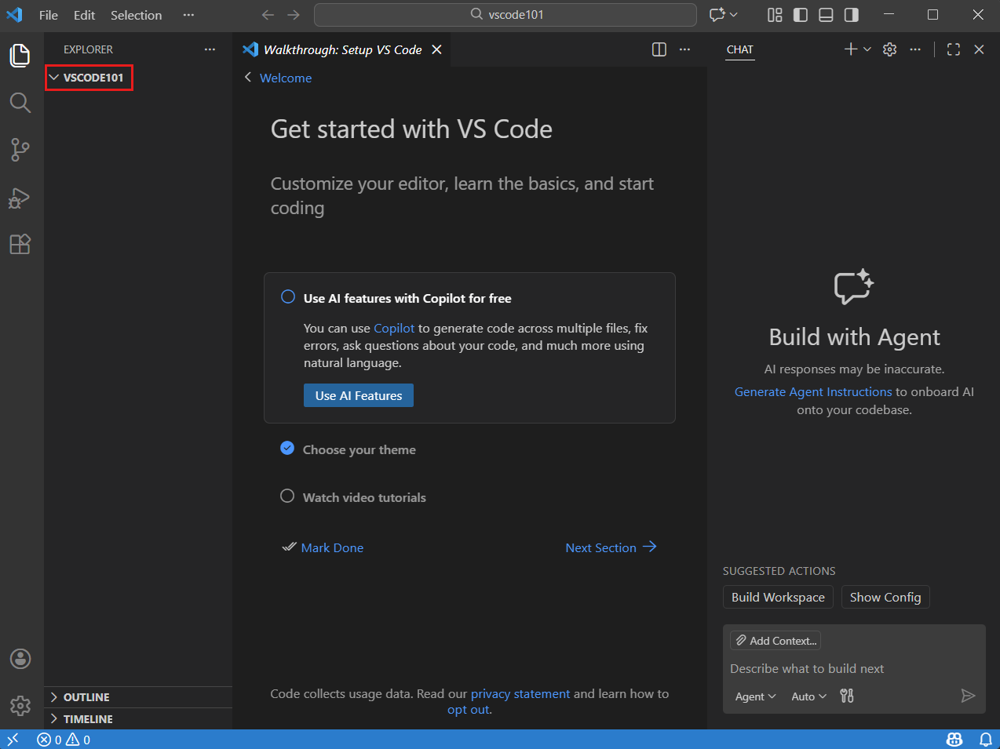
완료 확인 왼쪽 Explorer 위에 COUNSELING-PRACTICE가 보여요. 공식 예시 그림의 VSCODE101은 폴더 이름 예시입니다.
직접 만든 빈 폴더에서 Workspace Trust 질문이 나오면 그 폴더임을 확인하고 신뢰를 선택하세요. 다른 출처의 작업 폴더는 내용을 확인한 뒤 결정합니다.
원본 화면: Microsoft VS Code 문서. 원본 화면 위에 교재의 안내 표시를 겹쳐 두었습니다. 운영체제·버전에 따라 아이콘 위치와 예시 값은 달라질 수 있어요.
W3왼쪽 새 파일 아이콘 누르기
할 일 왼쪽 종이 두 장 모양 Explorer를 누르고, 폴더 이름 줄의 종이+ 아이콘(New File)을 눌러요.
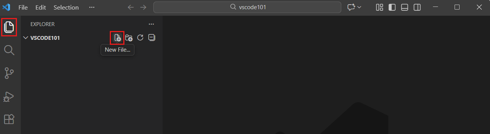
완료 확인 폴더 아래에 파일 이름을 적는 칸이 열려요.
원본 화면: Microsoft VS Code 문서. 원본 화면 위에 교재의 안내 표시를 겹쳐 두었습니다. 운영체제·버전에 따라 아이콘 위치와 예시 값은 달라질 수 있어요.
W4index.html 입력 → Enter
할 일 파일 이름 칸에 index.html을 정확히 적고 Enter. 오른쪽 빈 편집 영역에 이 장의 첫 HTML 코드를 넣어요.
완료 확인 상단 탭과 왼쪽 목록에 index.html이 보여요. index.html.txt가 아니어야 합니다.
원본 화면: Microsoft VS Code 문서. 원본 화면 위에 교재의 안내 표시를 겹쳐 두었습니다. 운영체제·버전에 따라 아이콘 위치와 예시 값은 달라질 수 있어요.
W5작성한 파일 저장
CtrlS
Windows는 Ctrl+S, macOS는 ⌘+S. 코드를 바꿀 때마다 저장해요.
완료 확인 탭 이름 옆의 미저장 점이 사라져요. 코드를 저장한 것이고, 아직 브라우저 화면을 새로 그린 것은 아닙니다.
키보드 조작을 설명하는 교재용 그림입니다. 실제 프로그램 화면 캡처는 아닙니다.
W6브라우저에서 파일 열기
ChromeCtrl + Oindex.html
Chrome을 열고 Ctrl+O(맥은 ⌘+O) → counseling-practice 안의 index.html 선택 → 열기. 또는 파일 탐색기에서 index.html을 두 번 눌러요.
완료 확인 코드 대신 큰 제목과 소개 문장이 보이면 성공입니다.
키보드 조작을 설명하는 교재용 그림입니다. 실제 프로그램 화면 캡처는 아닙니다.
W7고친 화면 확인
VS Code: 저장Chrome: 새로고침
HTML 제목 한 글자 변경 → Ctrl+S → 브라우저로 이동 → 새로고침 버튼 또는 Ctrl+R(맥은 ⌘+R).
완료 확인 바꾼 글자가 브라우저에 나타납니다. 이전 화면이면 파일 경로와 저장 여부를 먼저 확인하세요.
키보드 조작을 설명하는 교재용 그림입니다. 실제 프로그램 화면 캡처는 아닙니다.
파일을 만드는 것부터 화면 확인까지
브라우저는 인터넷 검색만 하는 프로그램이 아니라 HTML 파일을 읽어 화면으로 보여 주는 프로그램이에요. VS Code는 그 파일을 쓰고 고치는 편집기입니다. 두 프로그램의 역할을 먼저 나누어 생각해 보세요.
이번 장은 VS Code에 글을 쓰고 저장한 다음, 같은 파일을 브라우저로 열어 보는 한 바퀴를 완성합니다. 설치·폴더·파일·저장·열기 중 어느 단계에서 막혔는지 알 수 있도록 완료 화면도 확인합니다.
이제 계산 결과를 웹 화면으로 옮길 차례예요. HTML은 제목·문단·입력창처럼 내용의 의미를 표시합니다. CSS는 모양과 배치를 정하고, JavaScript는 입력·클릭에 반응해요. 웹 브라우저는 이 파일들을 읽어 화면을 그리는 프로그램이에요.
index.html 내용style.css 모양app.js 동작
VS Code 공식 사이트에서 운영체제에 맞는 안정 버전을 설치해요. Windows·macOS 모두 사용할 수 있어요.
바탕화면에 counseling-practice 폴더를 만들고 VS Code의 File → Open Folder로 여세요.
탐색기의 New File 버튼으로 index.html을 만들어요. 파일 이름이 index.html.txt가 되지 않도록 확장자까지 확인하세요.
아래 전체 코드를 입력하고 Ctrl+S(맥은 ⌘S)로 저장해요. 파일 탐색기에서 index.html을 두 번 눌러 브라우저로 열어요.
제목을 바꾸고 저장한 뒤 브라우저를 새로고침해요. VS Code 저장과 브라우저 새로고침은 별개예요.
예제 01 · HTML
첫 웹 문서 전체
어디에 쓰나요? VS Code의 index.html 전체를 교체하거나 아래 연습장에서 실행하세요.
먼저 예상하세요. 실행 전 아래 코드를 읽고 결과를 종이에 한 줄 써 보세요.
기대 결과
브라우저 탭: 마음쉼 상담실
본문: 큰 제목 마음쉼 상담실 + 소개 문장
코드를 읽는 순서
코드 / 기호
무슨 뜻인가요?
<h1>내용</h1>
여는 태그 + 내용 + 닫는 태그를 합쳐 요소라고 해요. h1은 가장 중요한 제목입니다.
<head>
문서 설정을 넣는 구역이에요. 화면 본문은 body에 써요.
charset="utf-8"
한글을 포함한 문자를 읽을 방식을 지정해요.
lang="ko"
문서의 언어가 한국어임을 알려요. 속성은 태그에 붙이는 추가 정보입니다.
한 군데 바꾸기
h1의 상담실 이름을 바꾸고 소개 문단을 하나 더 쓰세요.
힌트와 풀이 보기
body 안에 <p>예약 없이도 소개를 읽을 수 있어요.</p>를 추가하세요. title을 바꾸면 탭 이름, h1을 바꾸면 본문 제목이 달라져요.
책을 잠깐 덮어 보세요
title과 h1은 각각 어디에 보이나요?
확인 답안과 이유
title은 브라우저 탭 제목, h1은 본문 큰 제목으로 보입니다.
혼자 해 보는 과제
index.html을 직접 만들고 이름과 소개 문장을 바꾼 화면을 보여 주세요. 코드를 저장하지 않은 상태와 저장한 뒤 새로고침한 상태의 차이를 설명하세요.
선생님 수업 메모
수업 전 파일 확장자 표시와 한글 입력 전환을 확인하세요. Live Server는 필수가 아닙니다. 파일 열기로 첫 성공을 만들고 15장에서 로컬 서버를 안내합니다.
지금까지의 짧은 예제는 화면 내용 조각입니다. 실제 파일에는 문서 전체의 뼈대가 필요해요. VS Code에서 1장의 폴더를 열고 index.html을 클릭합니다. 아래 전체 문서를 붙여 넣고 저장한 뒤 Chrome으로 엽니다. 기존 연습 파일을 남기고 싶으면 복사본을 먼저 만드세요.
속성(attribute)은 시작 태그 안에 붙이는 추가 정보입니다. lang="ko"에서 lang은 정보 이름, 따옴표 안 ko는 그 값이에요. 처음에는 기본 문서를 그대로 사용하되 body 안의 내용만 바꿉니다. title과 h1은 서로 다른 위치의 제목이므로 하나를 바꾸었다고 다른 하나가 저절로 바뀌지 않아요.
2-3. 제목·문단·줄바꿈을 구별해요.
h1~h6는 단순히 큰 글씨·작은 글씨를 고르는 버튼이 아니라 제목의 단계입니다. 이 수업은 한 페이지의 대표 제목 h1 하나, 그 안의 주제 h2, 필요할 때 더 작은 주제 h3를 씁니다. h4~h6도 더 깊은 단계예요. 글씨 크기는 다음 장의 CSS로 따로 정할 수 있습니다.
문단은 p, 한 문단 안에서 꼭 필요한 줄바꿈은 br입니다. 코드를 작성하며 Enter를 여러 번 누른 것만으로는 화면에 같은 줄바꿈이 모두 생기지 않아요. br은 내용을 감싸지 않는 빈 요소라 </br>를 붙이지 않습니다. hr은 주제가 달라지는 구분선입니다.
H03 · 큰 주제 두 개와 문단
입력 위치: 교재의 아래 칸에는 body 안의 태그 조각만 넣습니다. VS Code에서는 HTML 기본 문서의 body 안을 교체합니다. 문서 전체는 아래 완성 파일 링크로 열 수 있어요.
코드에서 찾을 부분
일상말로 읽으면
h1 → h2 → h3
문서 전체 → 주제 → 그 안의 작은 주제
p 두 개
서로 다른 두 문단
br
같은 문단 안에서 다음 줄
hr
주제가 바뀌는 구분
한 군데 바꾸기: p 하나를 더 추가하세요. 여백을 늘리려고 br을 여러 개 반복하지 않습니다.
막혔을 때: p 안에 h2를 넣지 마세요. 제목과 문단은 나란히 적습니다. 여백은 다음 장에서 CSS로 조절합니다.
연습 그림 room.svg 내려받기 → 다운로드 폴더의 room.svg를 자기 프로젝트의 images 폴더에 복사하세요. images 폴더가 없으면 VS Code 왼쪽에서 New Folder로 먼저 만듭니다.
img는 그림을 넣는 빈 요소라 끝 태그가 없습니다. src는 그림 파일 위치, alt는 그림이 전달하는 내용을 글로 설명하는 속성입니다. 파일이 없거나 경로가 다르면 그림이 뜨지 않아요. alt는 파일 이름을 반복하는 칸이 아니라 필요한 뜻을 전달하는 칸입니다.
내 연습 폴더/
index.html
images/
room.svg
제공한 images/room.svg를 같은 구조로 복사합니다. svg도 브라우저에서 표시할 수 있는 이미지 형식이에요. 실제 사진으로 바꾸면 room.jpg 같은 본인 파일 이름으로 src도 맞춥니다. Windows에서만 통하던 대소문자 차이가 공개 서버에서는 실패할 수 있으므로 철자를 정확히 씁니다.
H07 · 그림 위치와 대체 설명
입력 위치: 교재의 아래 칸에는 body 안의 태그 조각만 넣습니다. VS Code에서는 HTML 기본 문서의 body 안을 교체합니다. 문서 전체는 아래 완성 파일 링크로 열 수 있어요.
코드에서 찾을 부분
일상말로 읽으면
src="images/room.svg"
지금 문서에서 images 폴더 안의 room.svg를 찾음
alt="…"
그림을 못 보거나 보조 도구를 쓰는 사람에게 전달할 설명
width·height
그림의 표시 크기 단서. CSS와 화면 대응은 다음 장
한 군데 바꾸기: src를 잠시 missing.svg로 바꿔 실패를 보고 다시 원래 경로로 고칩니다.
막혔을 때: 컴퓨터 전체 경로 C:\…를 올리지 말고 프로젝트 안의 상대 경로를 씁니다. 그림 파일도 함께 복사해야 합니다.
body 안에는 문단 같은 HTML, head의 style 안에는 CSS입니다. VS Code에서 이 전체 문서를 저장 → Chrome에서 같은 index.html 열기 → 새로고침. 나중에는 CSS를 style.css로 분리하지만, 지금은 한 파일 안에서 연결 관계를 먼저 익혀요. HTML 시작 태그에 style="color: blue"로 직접 쓰는 방식도 있으나 이번 학습의 기본 방법은 아닙니다.
C03 · style 안의 내용만 바꾸는 연습
입력 위치: CSS만 아래 칸에서 고칩니다. 미리보기에는 HTML이 준비되어 있습니다. VS Code에서는 이 수업의 CSS를 style 태그 안 또는 안내한 style.css에 넣습니다.
코드에서 찾을 부분
일상말로 읽으면
HTML의 <style> … </style>
CSS를 넣는 자리
CSS의 p { … }
그 자리 안의 규칙
한 군데 바꾸기: 자기 HTML의 style 안에 넣어 보고 녹색으로 보이는지 확인합니다.
막혔을 때: HTML 문서가 아니라 CSS 텍스트가 화면에 그대로 보이면 style 태그 바깥에 썼는지 확인하세요.
font-size는 글자 크기, font-family는 글꼴, line-height는 줄의 높이, font-weight는 굵기를 정합니다. system-ui는 기기의 기본 화면용 글꼴을 사용하라는 뜻이에요. 줄 간격 1.7은 글자 크기의 1.7배 정도 높이로 줄을 배치하라는 값입니다. font-family에 쉼표로 여러 이름을 적으면 앞 글꼴을 못 사용할 때 뒤의 글꼴 종류를 대신 찾습니다. sans-serif는 끝 장식이 없는 글꼴 종류예요.
C06 · 긴 문단 읽기 편하게
입력 위치: CSS만 아래 칸에서 고칩니다. 미리보기에는 HTML이 준비되어 있습니다. VS Code에서는 이 수업의 CSS를 style 태그 안 또는 안내한 style.css에 넣습니다.
코드에서 찾을 부분
일상말로 읽으면
font-size: 18px
글자 크기
line-height: 1.7
한 줄의 높이 비율
font-weight: 400
보통 굵기. 700은 보통 더 굵게 표시
한 군데 바꾸기: line-height를 1.2와 1.9로 바꿔 어느 쪽이 읽기 편한지 비교합니다.
막혔을 때: strong은 내용의 중요함, font-weight는 표시 굵기입니다. 둘을 같은 역할로 외우지 않습니다.
box-sizing: border-box는 지정한 너비 안에 padding·border까지 포함해 계산하라는 설정입니다. 또 margin: 0 auto처럼 값이 두 개이면 앞은 위·아래, 뒤는 왼쪽·오른쪽에 적용합니다. 따라서 위아래는 0, 좌우는 남는 공간을 자동으로 나눕니다.
width는 상자의 너비, max-width는 아무리 공간이 넓어도 넘지 않을 최대 너비입니다. margin의 auto를 좌우에 주면 남는 좌우 공간을 나누어 상자를 가운데에 놓을 수 있어요.
기본 크기 계산에서는 내용 너비에 padding·border가 더해질 수 있습니다. box-sizing: border-box를 주면 지정 너비 안에 padding·border를 포함해 계산합니다. 처음 반응형에서 화면 밖으로 튀어나가는 일을 줄이는 데 도움이 됩니다.
C10 · 줄어드는 본문 상자
입력 위치: CSS만 아래 칸에서 고칩니다. 미리보기에는 HTML이 준비되어 있습니다. VS Code에서는 이 수업의 CSS를 style 태그 안 또는 안내한 style.css에 넣습니다.
코드에서 찾을 부분
일상말로 읽으면
width: 100%
부모가 제공하는 너비를 기준으로 사용
max-width: 720px
너비의 상한선
margin: 0 auto
위아래 0, 좌우 남는 공간 자동 분배
box-sizing: border-box
padding·border를 너비 안에 포함
한 군데 바꾸기: 완성 파일을 새 탭으로 열고 창을 좁혔다 넓혀 보세요. max-width를 600px로도 비교합니다.
막혔을 때: width: 1000px처럼 큰 고정값을 주면 폰에서 넘칠 수 있어요. max-width와 width를 바꾸어 쓰지 않습니다.
지금까지 p { color: red; }는 모든 문단을 골랐습니다. 그런데 “다른 문단은 그대로 두고 이 안내문 하나만 빨갛게” 하고 싶을 수 있어요. 이때 원하는 HTML 요소에 내가 정한 이름표를 붙이는 것이 class 속성입니다.
먼저 HTML을 봅니다. <p class="notice">…</p>는 p 요소에 notice라는 이름표를 붙인 것입니다. notice는 브라우저가 정해 준 특별한 명령이 아니라 우리가 정한 이름이에요. CSS에서는 앞에 점을 붙여 .notice로 그 이름표를 고릅니다. HTML의 이름에는 점을 넣지 않습니다.
<h1>문의 전 안내</h1>
<p>편한 마음으로 읽어 주세요.</p>
<p class="notice">실제 상담을 접수하지 않는 연습 화면입니다.</p>
<p>다음에는 버튼 동작을 배웁니다.</p>
C16 · p 모두와 이름표가 있는 p 하나
입력 위치: CSS만 아래 칸에서 고칩니다. 미리보기에는 HTML이 준비되어 있습니다. VS Code에서는 이 수업의 CSS를 style 태그 안 또는 안내한 style.css에 넣습니다.
코드에서 찾을 부분
일상말로 읽으면
class="notice"
HTML: 이 요소에 notice라는 이름표
.notice
CSS: notice 이름표가 있는 요소를 고름
p
CSS: p 태그인 요소를 모두 고름
점 .
태그 이름이 아니라 클래스 이름을 고른다는 표시
한 군데 바꾸기: VS Code의 HTML에서 다른 p 하나에도 class="notice"를 붙여 두 문단이 같은 모양인지 봅니다.
막혔을 때: HTML에서 class=".notice"라고 점을 넣거나 CSS에서 notice처럼 점을 빼면 연결이 달라집니다. 이름 철자를 맞추세요.
클래스는 같은 이름을 여러 요소에 붙여 재사용할 수 있습니다. 반면 2장에서 링크 목적지로 배운 id는 같은 문서에서 유일해야 합니다. 일반적인 같은 출처·중요도 조건에서 .notice 같은 클래스 규칙은 p 같은 태그 규칙보다 더 구체적이라 앞의 일반 문단 색 대신 적용될 수 있어요. !important나 복잡한 우선순위 계산은 지금 다루지 않습니다.
이제야 .card를 읽을 준비가 됐습니다. card는 “카드 모양을 자동으로 만드는 CSS 명령”이 아니라 두 article에 붙인 이름입니다. 실제 모양은 그 안의 margin·padding·border 등 이미 배운 속성이 만듭니다.
<article class="card">
<h2>개인 상담</h2>
<p>한 사람의 이야기를 듣는 시간입니다.</p>
</article>
<article class="card">
<h2>진로 상담</h2>
<p>일과 진로의 선택을 정리합니다.</p>
</article>
C17 · 이제 읽을 수 있는 .card
입력 위치: CSS만 아래 칸에서 고칩니다. 미리보기에는 HTML이 준비되어 있습니다. VS Code에서는 이 수업의 CSS를 style 태그 안 또는 안내한 style.css에 넣습니다.
코드에서 찾을 부분
일상말로 읽으면
article class="card" 두 개
두 항목에 같은 모양 이름표를 붙임
.card { … }
그 이름표가 있는 모든 요소를 꾸밈
padding·border·background-color
실제 카드처럼 보이게 만드는 이미 배운 설정
한 군데 바꾸기: VS Code의 HTML과 CSS 양쪽에서 card를 counsel로 바꾸세요. 모양이 같은지 확인합니다.
막혔을 때: class라는 말이 나와도 JavaScript의 클래스 문법과 섞지 마세요. 지금은 HTML의 모양 적용 이름표입니다.
인스펙터(Inspector)는 웹페이지의 글자·버튼을 골라 그 구조와 스타일을 살펴보는 도구입니다. Chrome에는 이 기능을 포함한 개발자 도구(DevTools)가 이미 들어 있어요. VS Code는 원본 파일을 쓰는 곳, Chrome은 결과를 보여 주는 곳, DevTools는 결과가 왜 그렇게 나왔는지 살피는 곳입니다. 별도 확장을 설치하지 않습니다.
Chrome에서 자신이 만든 웹페이지를 엽니다. 먼저 이 교재 화면에서 따라 해도 됩니다. 주소창이나 브라우저 탭이 아닌 페이지 안의 큰 제목 위에서 마우스 오른쪽 버튼을 누르세요.
메뉴 아래쪽의 검사(Inspect)를 누릅니다. Mac 트랙패드에서는 두 손가락 클릭을 사용해요.
오른쪽 또는 아래쪽에 Elements(요소)·Console(콘솔) 같은 탭이 있는 창이 나오면 성공입니다. 이 창이 개발자 도구예요.
페이지 위에서 우클릭 → 검사
따라 하기 페이지의 제목 위에서 우클릭하고 Inspect/검사를 찾으세요.
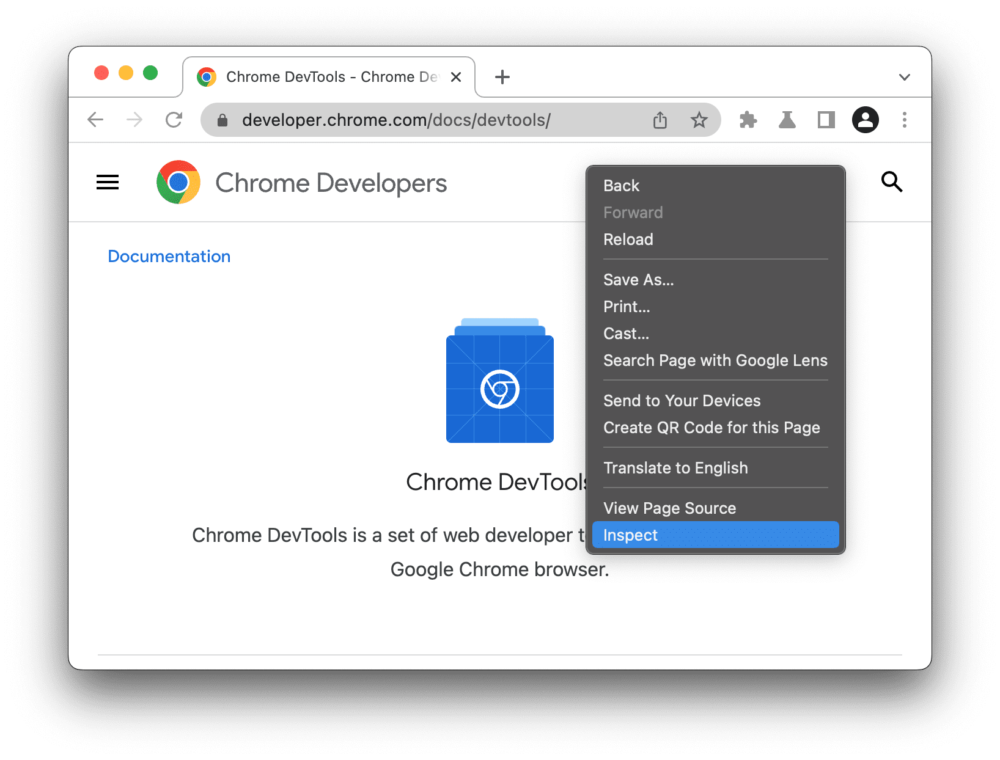
완료 확인 Elements 탭이 열리고 선택한 제목에 해당하는 줄이 강조됩니다.
Google Chrome 공식 문서의 실제 화면 예시. 그림 속 영문 문구·사이트는 공식 문서의 예제이며 아래 교재 실습의 글자와 다릅니다. Chrome 버전·언어에 따라 배치가 달라질 수 있어요. 원본·공식 설명
다른 열기 방법도 있어요. Chrome 오른쪽 위 ⋮ → 도구 더보기(More tools) → 개발자 도구(Developer tools). 메뉴를 사용하기 어려울 때는 아래 단축키 중 자신의 OS 것을 사용하세요. 키는 동시에 누릅니다.
하고 싶은 일
Windows / Linux
Mac
개발자 도구 열기
Ctrl + Shift + I · 또는 F12
⌘ + Option + I
요소 선택 모드
Ctrl + Shift + C
⌘ + Shift + C
Console 바로 열기
Ctrl + Shift + J
⌘ + Option + J
모바일 도구 막대 전환(도구 열린 상태)
Ctrl + Shift + M
⌘ + Shift + M
노트북에서 F12가 소리·밝기 기능으로 작동하면 Fn+F12를 쓰거나 Ctrl+Shift+I를 쓰세요. 닫기는 DevTools 오른쪽 위 × 또는 열기 단축키. Chrome 창 자체의 ×와 구별합니다. 탭이 안 보이면 DevTools 탭 줄의 »를 누르세요. 화면이 너무 좁으면 DevTools 내부 ⋮ → Dock side(도킹 위치)에서 아래쪽 또는 별도 창을 고를 수 있어요. DevTools에서 Esc는 보조 Console 서랍을 열거나 닫는 키이며 도구 전체 닫기와 다릅니다.
2. 함께 쓸 연습 페이지를 준비해요.
인스펙터 연습 페이지를 새 탭에서 열기 →. 교재와 연습 페이지를 두 탭에 두고 번갈아 보세요. 웹 기초를 아직 배우지 않았다면 이 링크만 열어 검사부터 연습하면 됩니다.
원본 수정까지 하려면 교재 저장소의 Code → Download ZIP → 압축 풀기 → VS Code File → Open Folder → study-materials/examples/web/inspector-practice 폴더를 엽니다. 왼쪽에 index.html·style.css·app.js·sample.svg 네 파일이 보여야 해요. index.html 우클릭 → Open with Live Server로 엽니다. 확장이 없다면 14장의 Live Server 설치 안내를 먼저 따라 하세요. Network 실습은 공개 연습 페이지 또는 이 http 주소에서 진행합니다.
inspector-practice/
index.html ← 글과 버튼
style.css ← 제목 색과 간격
app.js ← 버튼을 누르면 할 일
sample.svg ← 정상 그림 파일
3. Elements: 화면의 제목이 어느 HTML인지 찾기
요소(element)는 제목·문단·버튼처럼 HTML 태그로 만든 화면의 한 구성 요소예요. DOM은 브라우저가 HTML을 읽고 만들어 관리하는 구조입니다. Elements는 현재의 DOM을 보여 주므로 JavaScript가 바꾼 내용도 나타날 수 있어요. VS Code 원본과 항상 글자 하나까지 같아야 하는 것은 아닙니다.
연습 페이지의 마음쉼 상담실 · 검사 연습 제목 위에서 우클릭 → 검사.
Elements에서 <h1 id="pageTitle">…</h1> 줄을 찾습니다. 삼각형 ▶를 누르면 접힌 자식 구조를 펼칠 수 있어요.
다른 요소를 고르려면 DevTools 왼쪽 위 점선 사각형에 화살표가 있는 아이콘(Select an element)을 누르고, 페이지의 인사 버튼을 누릅니다. 이 모드에서는 버튼의 동작 대신 검사가 먼저 선택됩니다. 한 번 선택한 뒤 일반 버튼 클릭으로 돌아오세요.
Elements에서 제목 안의 글자 부분을 더블클릭 → “나의 상담실”로 변경 → Enter. 화면의 제목이 바뀌는지 확인합니다. 바꾸기 어렵다면 해당 h1 줄 우클릭 → Edit as HTML에서 글자만 수정하고 편집 영역 밖을 클릭하세요.
Elements의 선택 줄과 페이지 요소 연결
따라 하기 페이지의 제목을 검사하고 Elements에서 h1 줄을 선택하세요. 공식 그림의 p 등 태그는 다른 예제입니다.
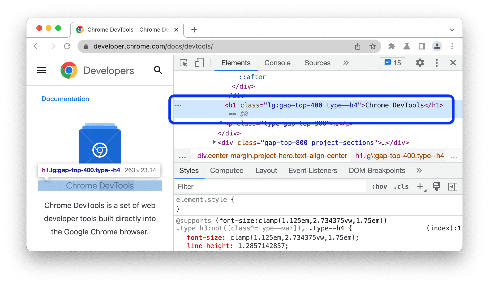
완료 확인 선택한 요소 위에 마우스를 올리면 페이지의 해당 부분이 색으로 표시됩니다.
Google Chrome 공식 문서의 실제 화면 예시. 그림 속 영문 문구·사이트는 공식 문서의 예제이며 아래 교재 실습의 글자와 다릅니다. Chrome 버전·언어에 따라 배치가 달라질 수 있어요. 원본·공식 설명
4. Styles: 색과 여백을 바꿔 보고 이유 찾기
제목 h1을 선택한 채 Elements 옆 또는 아래 Styles(스타일)을 보세요. 속성(property)은 color처럼 무엇을 바꿀지 정한 이름이고, 값(value)은 blue처럼 어떻게 바꿀지 정한 내용입니다. color: blue;는 글자 색을 파란색으로 바꾸라는 CSS예요.
Styles 맨 위 element.style { }의 빈 부분 클릭 → color 입력 → Tab → blue 입력 → Enter. 제목이 파란색이면 성공.
다음 빈 줄에 font-size: 40px;를 넣어 크기도 비교해 보세요. 속성 왼쪽 체크 상자를 끄고 켜면 그 한 줄의 적용 전·후를 비교할 수 있어요.
아래 #pageTitle 규칙과 오른쪽의 style.css:줄번호를 찾아보세요. 파일 링크를 누르면 Sources에서 브라우저가 읽은 위치를 볼 수 있습니다.
취소선이 있는 값은 다른 규칙에 우선순위가 밀렸거나 덮어써진 값일 수 있어요. 유효하지 않은 값은 경고도 함께 확인합니다. Computed(계산됨) 탭에서 color를 검색하면 최종 적용된 값을 찾을 수 있어요.
Styles에서 속성 이름과 값 입력
따라 하기 선택한 제목의 Styles → element.style 빈 줄에 color: blue;를 추가하세요.
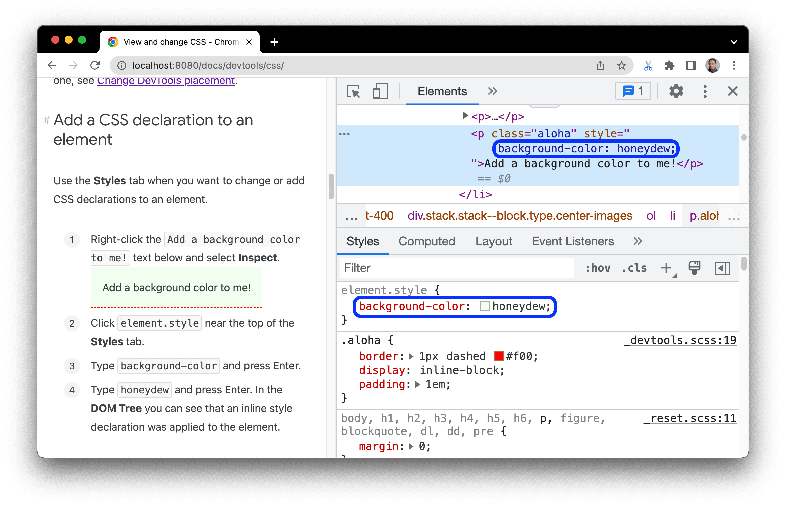
완료 확인 색을 바꾸고 체크를 해제했을 때 되돌아오는지 확인합니다.
Google Chrome 공식 문서의 실제 화면 예시. 그림 속 영문 문구·사이트는 공식 문서의 예제이며 아래 교재 실습의 글자와 다릅니다. Chrome 버전·언어에 따라 배치가 달라질 수 있어요. 원본·공식 설명
여백을 볼 때는 Styles 또는 Computed 아래쪽의 상자 그림(Box model)을 보세요. 가운데 content는 내용, padding은 안쪽 여백, border는 테두리, margin은 바깥 여백입니다. 우선 연습 페이지의 .card 규칙에서 padding 값을 24px → 40px로 바꾸고 안쪽 공간이 넓어지는지 살펴보세요.
5. Console: 직접 실행하고 빨간 오류를 읽기
Console(콘솔)은 JavaScript 명령을 시험하고 출력·오류를 보는 창입니다. Elements에서 Console 탭으로 이동하세요. 입력 줄의 > 옆을 클릭하고 아래 코드를 한 줄씩 입력한 뒤 Enter. 이 수업에서는 짧은 코드를 직접 타이핑해 보세요. Chrome이 붙여넣기를 막는 경우 보호 기능을 해제하지 말고 직접 입력하면 됩니다.
첫 줄은 5를 계산합니다. 둘째 줄은 글을 출력합니다. 출력 아래의 undefined는 console.log의 반환값 표시이며 오류가 아니에요. 셋째 줄의 document는 현재 문서, querySelector는 조건에 맞는 요소를 찾는 함수, "#pageTitle"은 id가 pageTitle인 요소를 찾는 조건, textContent는 그 요소의 글자 내용입니다. 아직 외우지 말고 선택한 제목과 결과가 같은지만 확인하세요.
Console 탭과 명령 입력 줄
따라 하기 Console을 누르고 입력 줄에 2 + 3을 적어 Enter. 탭이 숨겨져 있으면 »에서 Console을 찾으세요.
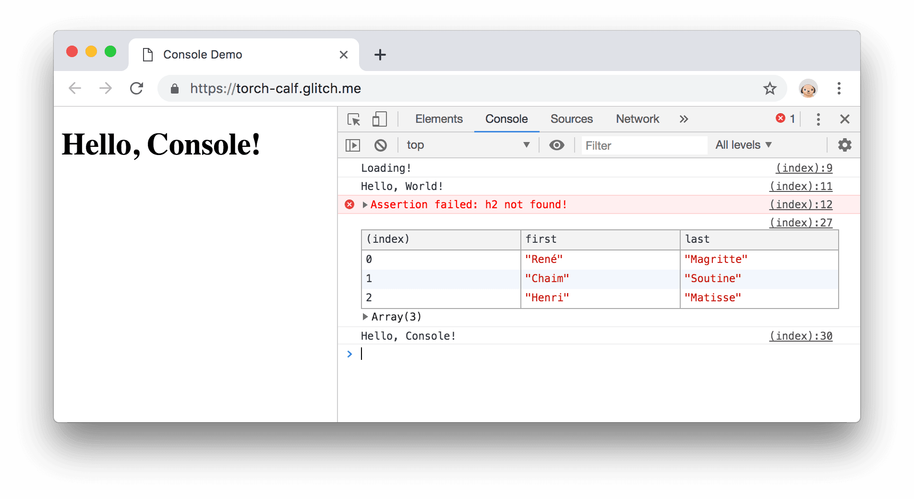
완료 확인 입력 아래에 숫자 5가 표시됩니다. 공식 그림의 출력은 다른 예제입니다.
Google Chrome 공식 문서의 실제 화면 예시. 그림 속 영문 문구·사이트는 공식 문서의 예제이며 아래 교재 실습의 글자와 다릅니다. Chrome 버전·언어에 따라 배치가 달라질 수 있어요. 원본·공식 설명
Console을 연 상태에서 연습 페이지의 정상 인사 버튼을 클릭합니다. 페이지 안내 문장과 Console의 “인사 버튼 클릭”을 함께 확인하세요.
그다음 오류 연습 버튼 클릭. 빨간 ReferenceError: showCounselTip is not defined가 나오도록 의도한 버튼입니다. “showCounselTip이라는 이름을 찾지 못했다”는 뜻이에요.
오류 오른쪽 app.js:숫자 링크를 클릭하면 Sources에서 해당 줄을 볼 수 있어요. 실행 중인 파일 경로가 자신의 app.js인지 확인합니다.
VS Code에서 같은 app.js를 열고 파일 맨 아래에 다음 함수를 추가합니다. 저장 → 브라우저 새로고침 → Console 지우기 아이콘(또는 Clear console) → 오류 버튼 다시 클릭. 안내가 나오고 같은 빨간 오류가 새로 생기지 않으면 수정 성공입니다.
function showCounselTip() {
document.querySelector("#message").textContent = "편한 시간에 상담을 문의해 주세요.";
}
Console 필터에 글자가 있으면 필요한 출력이 숨을 수 있어요. 필터를 비우고 로그 수준에서 Info·Errors가 켜졌는지 확인하세요. Clear console은 로그 화면만 지우며 오류 코드를 고치지 않습니다. SyntaxError는 괄호·따옴표 같은 문법, ReferenceError는 없는 이름, TypeError는 값의 종류나 사용 방법 문제를 먼저 살펴보세요. 빨간 글 전체를 추측해 고치지 말고 오류 종류 → 메시지 → 파일 → 줄 번호 → 그 줄에서 사용한 이름 순서로 읽습니다.
6. 모바일 크기로 보기: 휴대전화 아이콘 찾기
DevTools가 열린 상태에서 왼쪽 위 휴대전화·태블릿이 겹친 아이콘(Toggle device toolbar)을 클릭합니다. 단축키는 Windows Ctrl+Shift+M / Mac ⌘+Shift+M.
페이지 위쪽 기기 목록에서 Responsive를 고르고 너비 칸에 390을 입력합니다. 높이는 844로 해 보세요. 페이지 전체가 390px 너비로 바뀝니다.
글자가 잘리는지, 버튼이 화면 밖으로 나가는지, 가로 스크롤이 생기는지 확인하고 너비를 1000으로 바꿔 비교하세요.
같은 기기 아이콘을 다시 누르면 일반 화면으로 돌아옵니다. 모바일 모드는 크기와 일부 조건을 흉내 내는 기능이며 실제 휴대전화에서의 최종 확인도 필요해요.
Responsive 너비 칸에 390 입력
따라 하기 기기 모드의 위쪽 너비 칸을 찾아 390으로 바꾸세요.
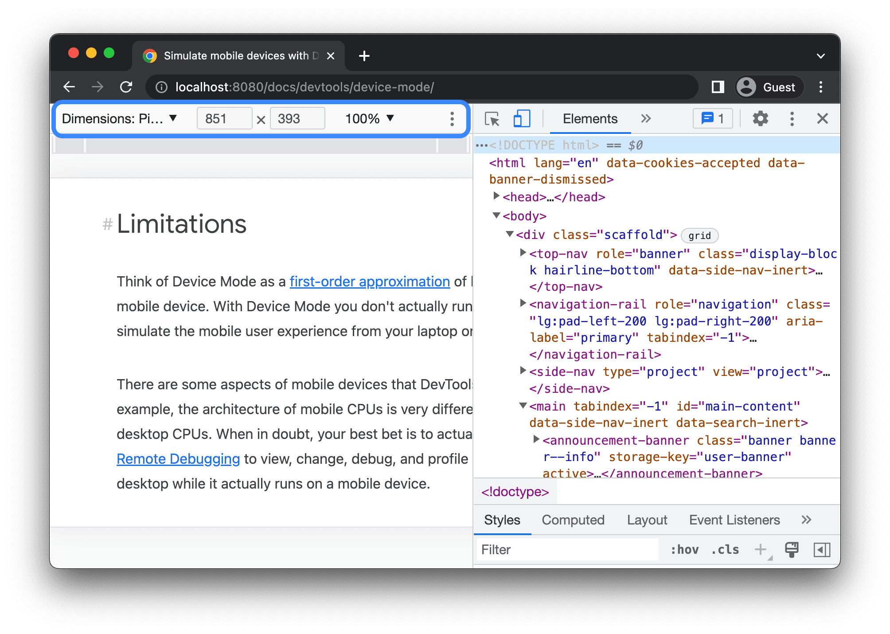
완료 확인 좁은 화면에서 카드와 버튼이 잘리지 않고 모두 보입니다.
Google Chrome 공식 문서의 실제 화면 예시. 그림 속 영문 문구·사이트는 공식 문서의 예제이며 아래 교재 실습의 글자와 다릅니다. Chrome 버전·언어에 따라 배치가 달라질 수 있어요. 원본·공식 설명
7. Network: 이미지·CSS·JS가 안 보일 때
Network(네트워크)는 브라우저가 서버에 어떤 파일을 요청했고 어떤 답을 받았는지 보여 줍니다. 파일 이름뿐 아니라 요청한 전체 경로를 확인하는 것이 핵심이에요. 내 PC에서만 여는 file://보다 공개 연습 주소 또는 Live Server의 http:// 주소에서 실습하세요.
Network 탭 → 기록 버튼이 빨간색인지 확인 → 브라우저 새로고침. 탭을 열기 전에 끝난 요청은 없을 수 있으므로 반드시 새로고침하세요.
목록에서 index.html·style.css·app.js를 찾습니다. Name은 파일, Status는 응답 상태, Type은 종류예요. 200은 정상 응답, 304는 캐시 재검증 후 사용, 404는 그 경로에서 파일을 찾지 못함을 뜻합니다. 취소·차단·네트워크 단절은 숫자 대신 별도 오류로 보일 수 있어요.
연습 페이지의 이미지 404 연습 버튼을 클릭합니다. 없는 missing-photo.png를 요청해 빨간 행이 생깁니다. Filter에 missing-photo를 입력하거나 Img 필터로 찾아보세요.
그 행 클릭 → Headers → Request URL 확인. 실제 폴더에 없는 파일 이름임을 확인합니다. VS Code app.js의 "missing-photo.png"를 "sample.svg"로 수정 → 저장 → 새로고침 → 같은 버튼 클릭. 그림이 보이고 새 요청이 정상인지 확인합니다. 필터는 sample로 바꾸거나 비워야 합니다.
Network 목록의 Name·Status 확인
따라 하기 Network 탭을 열고 새로고침한 뒤 파일 행을 누르세요.
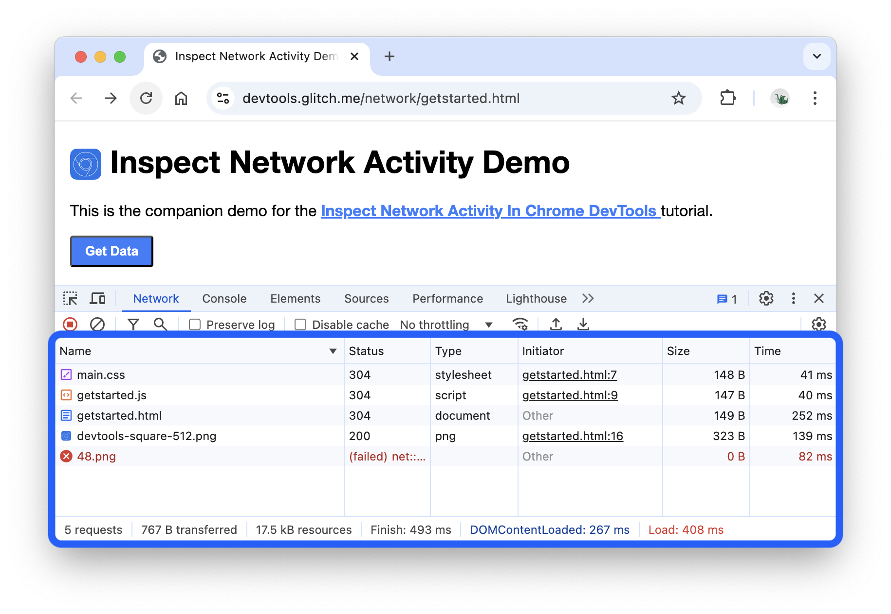
완료 확인 어떤 주소를 요청했고 응답이 성공했는지 설명할 수 있습니다.
Google Chrome 공식 문서의 실제 화면 예시. 그림 속 영문 문구·사이트는 공식 문서의 예제이며 아래 교재 실습의 글자와 다릅니다. Chrome 버전·언어에 따라 배치가 달라질 수 있어요. 원본·공식 설명
수정했는데 옛 화면이면 DevTools를 연 상태에서 Network의 Disable cache를 체크하고 새로고침해 보세요. 이 옵션은 DevTools가 열려 있을 때 적용됩니다. 그래도 옛 내용이면 GitHub에 올렸는지·배포가 완료됐는지·열어 둔 주소가 맞는지 확인하세요. 콘솔에 보이는 favicon.ico 404는 사이트 아이콘 누락일 수도 있으므로, 현재 안 되는 기능과 관련된 app.js·CSS·이미지 요청부터 구분합니다.
8. Inspector에서 찾은 답을 원본에 저장하기
Elements에서 글자를 바꾼 뒤 새로고침해 보세요. 원래 문장으로 돌아오는 것을 확인합니다.
VS Code index.html의 h1 글자를 “나의 상담실”로 변경하고 저장 → 새로고침. 이제 바뀐 글자가 유지돼요.
스타일을 계속 유지하려면 style.css의 #pageTitle 규칙에서 color를 #2563eb로 변경하고 저장합니다. element.style에 넣은 임시 값만 남겨 두지 마세요.
공개 사이트까지 바꾸려면 아래 VS Code → GitHub → 자동 배포 수업을 따라갑니다. DevTools의 임시 수정과 컴퓨터 저장만으로는 서버 파일이 바뀌지 않아요.
반응형은 사용자의 화면 너비에 맞춰 배치·간격·그림 크기가 달라지는 방식입니다. 화면 전체를 작게 축소하는 것과 다릅니다. 휴대전화에서는 카드 한 칸, 중간 화면은 두 칸, 넓은 화면은 세 칸으로 같은 내용을 재배치해 볼게요. 이 수업은 JavaScript 없이 HTML과 CSS만 사용합니다.
바탕화면에 responsive-practice 폴더 생성 → VS Code File → Open Folder로 열기.
아래 index.html 전체를 새 index.html에 입력하고 저장합니다. 다음 CSS 전체는 별도 style.css에 저장하세요. HTML과 CSS를 같은 파일 칸에 섞어 넣지 않습니다.
예제 그림 room.svg는 아래 완성 파일 폴더에서 복사합니다. 파일 복사가 아직 어렵다면 그림 줄을 잠시 빼도 카드 배치 연습은 할 수 있어요.
Chrome에서 index.html을 열거나 Live Server로 실행. 아래 단계마다 수정 → 저장 → 새로고침 → 너비 비교를 반복합니다.
반응형 완성 화면 새 탭으로 열기 →. 저장소의 study-materials/examples/web/responsive-practice에 세 파일이 있습니다.
1단계 · HTML 전체 만들기
<!doctype html>
<html lang="ko">
<head>
<meta charset="utf-8">
<meta name="viewport" content="width=device-width, initial-scale=1">
<title>마음쉼 상담실 · 반응형 연습</title>
<link rel="stylesheet" href="style.css">
</head>
<body>
<header class="container">
<h1>마음쉼 상담실</h1>
<nav class="menu" aria-label="주요 메뉴">
<a href="#services">상담 안내</a><a href="#intro">상담실 소개</a><a href="#contact">문의 방법</a>
</nav>
</header>
<main class="container">
<section id="intro"><h2>내 화면에 맞는 상담 안내</h2>
<p>휴대전화에서는 한 줄에 하나, 넓은 화면에서는 여러 카드를 보여 줍니다.</p>
<img class="hero-image" src="room.svg" alt="상담실을 나타낸 연습 그림" width="1000" height="320">
</section>
<section id="services"><h2>상담 종류</h2><div class="cards">
<article class="card"><h3>개인 상담</h3><p>나의 감정과 고민을 천천히 살펴봅니다.</p><a class="button" href="#contact">문의 방법 보기</a></article>
<article class="card"><h3>진로 상담</h3><p>일과 진로에 관한 선택을 함께 정리합니다.</p><a class="button" href="#contact">문의 방법 보기</a></article>
<article class="card"><h3>관계 상담</h3><p>대화와 관계의 어려움을 이야기합니다.</p><a class="button" href="#contact">문의 방법 보기</a></article>
</div></section>
<section id="contact"><h2>문의 방법</h2><p>실제 상담을 접수하지 않는 반응형 화면 연습입니다.</p></section>
</main>
</body>
</html>
meta name="viewport"는 모바일 브라우저가 화면을 기기의 너비로 다루게 하는 설정이에요. 빠뜨리면 데스크톱처럼 넓은 화면으로 계산한 뒤 축소해 보여 줄 수 있습니다. class="cards"는 세 카드를 묶는 상자, 각 class="card"는 그 안의 카드 하나입니다. CSS는 이 class 이름으로 대상을 찾습니다.
px는 CSS에서 크기를 정하는 단위이고, %는 부모 상자 크기에 대한 비율입니다. fr는 Grid의 남은 공간을 나누는 비율이에요. 미디어 쿼리(@media)는 조건에 맞을 때만 적용하는 CSS이며, 배치가 바뀌는 기준 너비를 브레이크포인트라고 부릅니다. 600·900은 이 예제를 위한 기준이지 모든 기기의 정답은 아니에요. 실제 내용이 답답해지는 지점을 기준으로 조정합니다.
이 코드가 모바일 우선(mobile first)인 이유는 기본을 한 칸으로 쓰고, 공간이 충분해지면 min-width 조건으로 두 칸·세 칸을 추가하기 때문입니다. 900px 이상에서는 600px 조건도 참이지만 뒤의 세 칸 규칙이 같은 선택자의 두 칸 규칙보다 나중에 있어 적용됩니다. 앞서 나오는 max-width 예제는 좁아질 때 덮어쓰는 다른 방식이며, 두 방식을 한꺼번에 복사해 조건을 뒤섞지 마세요.
완성 화면 그림 비교 · 390 / 768 / 1100px
같은 HTML·CSS를 실제 브라우저의 서로 다른 너비로 실행해 캡처한 화면입니다. 이미지의 크기 자체가 아니라 카드가 한 줄에 몇 개 놓였는지 비교하세요.
390px · 한 줄에 1개
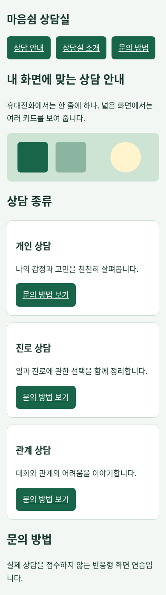
768px · 한 줄에 2개
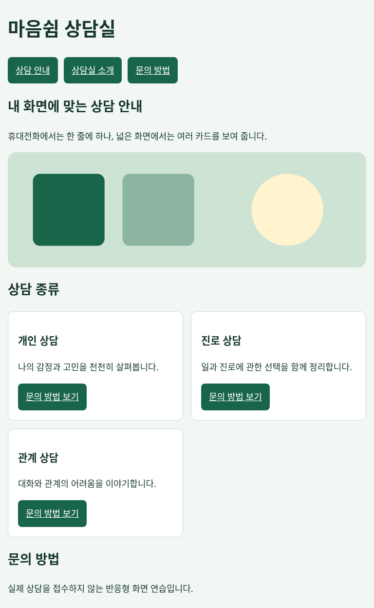
1100px · 한 줄에 3개
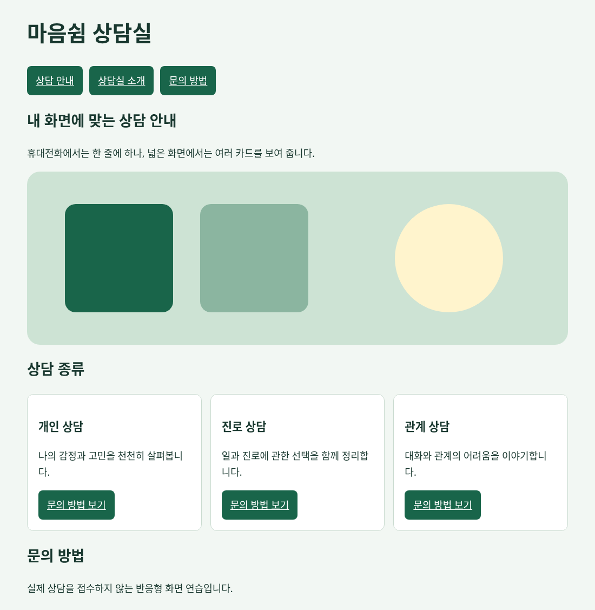
3단계 · Inspector로 1칸 → 2칸 → 3칸 확인하기
검사 창 열기부터 다시 따라 해요
완성 페이지의 제목 위에서 우클릭 → 검사 → Elements 탭이 보이는지 확인
DevTools 왼쪽 위 휴대전화·태블릿 아이콘 클릭. 안 보이면 Windows Ctrl+Shift+M / Mac ⌘+Shift+M
페이지 위 기기 목록에서 Responsive 선택 → 너비 칸에 390 입력 → Enter → 카드 한 칸 확인
너비를 768로 변경 → 두 칸 확인. 세 번째 카드는 다음 줄로 이동
너비를 1100으로 변경 → 세 칸 확인. 이후 599/600, 899/900도 입력해 바뀌는 경계 확인
교재용 클릭 순서 그림이며 실제 프로그램 캡처가 아닙니다.
390·768·1100px는 연습용 너비이며 특정 휴대전화 모델을 뜻하지 않습니다. 태블릿·휴대전화의 세로·가로 모드, 확대, 긴 문구에서도 배치가 달라질 수 있으니 중간 너비도 드래그해 살펴보세요. 기기 모드에서 표시되는 페이지 너비와 브라우저 바깥 창 너비는 다를 수 있습니다. DevTools를 옆에 붙여 놓으면 페이지에 남는 공간도 줄어듭니다.
4단계 · 일부러 깨뜨린 뒤 원인 고치기
style.css 맨 아래에 잠시 .container { width: 1000px; }를 추가 → 저장 → 390px 확인. 본문이 화면보다 넓어집니다.
Elements에서 container를 선택하고 Styles에서 이 줄을 체크 해제해 비교합니다. “폭이 고정되었기 때문”이라고 이유를 말해 보세요.
VS Code에서 방금 넣은 줄을 삭제하고 저장 → 새로고침. calc(100% - 32px)가 다시 적용되어 넘침이 없어지는지 봅니다.
첫 카드 설명을 두세 문장 늘려 보세요. 글을 숨기거나 페이지 전체에 overflow-x: hidden을 넣어 문제를 가리지 말고, 너비·긴 단어·그림을 검사합니다.
공식 설명: MDN 반응형 웹 디자인 · Chrome 기기 모드. 아래 기존 예제는 두 칸 배치와 접근성 복습용입니다. 먼저 위 전체 파일 실습으로 실행 순서를 익힌 뒤 사용하세요.
화면은 종이 한 장처럼 크기가 고정되어 있지 않아요
사람마다 폰과 컴퓨터 화면 폭이 달라요. 넓은 화면에서는 두 카드를 나란히 두고, 좁으면 한 장씩 내려놓는 배치가 필요합니다. 이것을 반응형이라고 불러요.
먼저 브라우저 폭을 손으로 좁혀 보세요. 내용이 잘리는지, 글자가 겹치는지, 가로로 밀어야 하는지를 확인합니다. 화면을 예쁘게 꾸미기 전에 작은 폭에서도 읽고 누를 수 있게 만드는 것이 목표예요.
웹페이지는 노트북과 폰에서 폭이 달라요. 반응형은 그 폭에 맞게 배치가 바뀌는 방식입니다. 모든 요소를 픽셀로 고정하기보다 최대 너비를 정하고 작은 화면에서는 줄바꿈을 허용해요. Grid는 칸 배치, Flexbox는 한 방향 정렬에 자주 사용합니다.
예제 06 · HTML
넓을 때 두 칸, 좁을 때 한 칸
어디에 쓰나요? 아래 HTML 연습장의 실행 버튼으로 확인하세요. 파일로 연습할 때는 VS Code의 index.html에 넣고 브라우저로 엽니다. HTML을 Console에 넣지 않습니다.
먼저 예상하세요. 실행 전 아래 코드를 읽고 결과를 종이에 한 줄 써 보세요.
기대 결과
화면 폭 600px 이하에서는 카드가 한 줄에 하나, 그보다 넓으면 두 개입니다.
코드를 읽는 순서
코드 / 기호
무슨 뜻인가요?
1fr 1fr
남는 공간을 같은 크기의 두 칸으로 나눠요.
gap: 16px
칸 사이 간격을 정해요.
@media (max-width: 600px)
화면 폭이 600px 이하일 때 안쪽 CSS를 적용해요.
min(100% - 32px, 800px)
화면보다 32px 작거나 800px 중 더 작은 너비를 사용합니다.
한 군데 바꾸기
600px 기준을 800px로 바꾸고 브라우저 폭을 조절하세요.
힌트와 풀이 보기
한 칸으로 바뀌는 시점이 더 넓어집니다. 같은 코드를 390px와 1000px에서 비교하세요.
예제 07 · HTML
가로 메뉴도 넘치면 줄바꿈
어디에 쓰나요? 아래 HTML 연습장의 실행 버튼으로 확인하세요. 파일로 연습할 때는 VS Code의 index.html에 넣고 브라우저로 엽니다. HTML을 Console에 넣지 않습니다.
먼저 예상하세요. 실행 전 아래 코드를 읽고 결과를 종이에 한 줄 써 보세요.
기대 결과
메뉴가 가로로 놓이고 공간이 부족하면 다음 줄로 넘어갑니다. Tab 키로 링크를 이동할 수 있어요.
코드를 읽는 순서
코드 / 기호
무슨 뜻인가요?
display: flex
자식 요소를 한 방향으로 배치해요.
flex-wrap: wrap
공간이 부족하면 다음 줄로 넘깁니다.
:focus-visible
키보드로 선택한 위치를 눈에 보이게 표시해요.
한 군데 바꾸기
메뉴를 두 개 더 추가하고 폭을 좁히세요.
힌트와 풀이 보기
링크와 그 목적지 id를 함께 만들어요. Tab 키로 순서대로 이동되는지도 확인합니다.
책을 잠깐 덮어 보세요
작은 화면에서 가로 스크롤이 생기면 어디를 먼저 볼까요?
확인 답안과 이유
화면보다 큰 고정 너비, 줄바꿈 안 되는 요소, 이미지 크기와 여백을 확인해요.
혼자 해 보는 과제
소개 화면을 390px와 1000px에서 확인하세요. 두 폭 모두 제목·카드·메뉴가 잘리지 않아야 합니다. Tab 키 이동 표시도 확인하세요.
선생님 수업 메모
학습자가 폰 사용자 역할을 맡아 글자 확대와 키보드 이동을 해 보게 하세요. 멋진 색보다 읽기와 클릭을 우선 평가합니다.
앞 네 장에서 HTML로 내용을 쓰고 CSS로 모양을 정했어요. JavaScript는 그 화면에서 클릭·입력·계산 같은 동작을 처리하는 언어입니다. 지금부터는 화면 전체를 고치기 전에 작은 명령을 따로 실행해 봅니다.
아래 연습장의 실행은 교재 안의 작은 출력 실험이에요. Console은 개발자가 값을 확인하는 창입니다. 여기서 출력한 글자가 최종 웹페이지 본문에 자동으로 나타나지는 않아요. 12장에서 페이지 요소와 연결합니다.
컴퓨터는 마음을 짐작하지 못해요. “적당히 예약을 받아 줘” 대신 “남은 자리를 3으로 정한다. 한 명이 신청하면 1을 뺀다. 남은 자리를 보여 준다”처럼 순서를 정확히 적어야 해요. 이 순서가 알고리즘입니다. 그것을 언어의 규칙에 맞게 적으면 코드가 돼요.
낱말
지금 필요한 뜻
파일
이름을 붙여 저장한 정보 한 묶음. .html, .kt는 종류를 나타내는 확장자예요.
폴더
여러 파일을 모으는 곳. 파일과 폴더는 다른 것이에요.
실행
작성한 명령을 컴퓨터가 실제로 수행하는 것. 저장만 해서는 실행되지 않아요.
문법
코드를 쓰는 규칙. 따옴표나 괄호도 이 규칙의 일부예요.
오류 / 디버깅
규칙이나 동작이 잘못된 상태 / 원인을 찾아 고치는 과정.
실행하기 전에: 어디에 입력하고 어디서 결과를 보나요?
JavaScript는 코드 편집기에 글만 적으면 자동 실행되는 것이 아닙니다. 아래 세 방법의 입력 장소·실행 버튼·결과 장소를 먼저 구별해요. 앞에 배치한 개발자 도구 수업의 1절을 따라 창을 열어 본 뒤 진행하세요.
방법
입력
실행
결과
교재 연습장
아래 코드 칸
실행 / 다시 실행
버튼 아래 결과창
Chrome
개발자 도구 Console 입력 줄
Enter
Console 안
VS Code에서 파일 작성
app.js
HTML 열기 또는 F5
Chrome Console 또는 VS Code Debug Console
방법 1 · Chrome Console을 먼저 열어 보고 입력하기
Chrome에서 페이지 안의 제목 위에서 우클릭 → 검사(Inspect). 또는 Chrome 오른쪽 위 ⋮ → 도구 더보기 → 개발자 도구.
오른쪽 또는 아래쪽에 새 도구 창이 보이면 위쪽 Console(콘솔) 탭 클릭. 안 보이면 탭 줄의 »에서 Console 선택. Elements와 Console은 다른 탭입니다.
Console 아래쪽 > 기호 옆의 빈 입력 줄을 클릭하세요. 주소창·페이지 본문·Elements의 HTML 줄에 입력하지 않습니다.
2 + 3을 직접 입력 → Enter. 바로 아래에 5가 나오면 준비 완료. 그다음 console.log("반가워요");를 직접 입력 → Enter. “반가워요”가 보이면 성공입니다.
열기 단축키는 Windows Ctrl+Shift+I / Mac ⌘+Option+I, Console 바로 열기는 Windows Ctrl+Shift+J / Mac ⌘+Option+J입니다. console.log 아래 undefined가 한 번 더 보이는 것은 그 명령의 반환값 표시이며 오류가 아닙니다. 붉은 오류와 구별하세요. Console은 개발자가 출력·오류를 보는 곳이므로 글자가 페이지 본문에 자동으로 생기지 않습니다.
Console의 입력 줄을 찾으세요.
Console 탭 → 아래 입력 줄에 2 + 3 → Enter → 5 확인
Chrome 공식 Console 문서의 실제 예시 화면입니다. 그림 속 출력은 교재의 예제와 다릅니다. 원본
키를 잘못 눌러 창을 닫았으면 같은 열기 단축키로 다시 여세요. 붙여넣기 보호 안내가 나오면 해제 명령을 입력하지 말고 짧은 코드를 직접 적습니다. 입력을 시작할 줄이 안 보이면 Console 탭을 눌렀는지, 필터 칸을 클릭한 것은 아닌지 먼저 확인해요.
방법 2 · VS Code에서 app.js 파일을 만들고 실행하기
이 방법은 코드를 파일로 남기는 연습입니다. VS Code는 작성·저장, Chrome은 실행을 맡습니다. 아직 Node.js나 Code Runner를 설치할 필요는 없어요. HTML을 1장에서 이미 만들었으므로 “나중 장에서 파일을 만든다”는 설명을 기다리지 않고 지금 직접 연결합니다.
처음부터 만드는 순서
바탕화면에 js-first-practice 폴더 만들기 → VS Code File → Open Folder → 그 폴더 선택
왼쪽 Explorer의 New File → index.html 생성 → 아래 HTML 전체 입력 → 저장
같은 폴더에서 New File → app.js 생성 → 아래 인사 두 줄만 입력 → 저장
Chrome에서 Ctrl+O(Mac ⌘+O) → 방금 만든 index.html 열기. 또는 14장의 Live Server를 이미 설치했다면 Open with Live Server 사용
Console을 연 상태에서 브라우저 새로고침 → “반가워요”, “나의 상담 서비스” 두 줄 확인
교재용 클릭 순서 그림이며 실제 프로그램 캡처가 아닙니다.
index.html 전체 내용 — HTML 파일에 넣습니다. app.js 안에 넣지 마세요.
<!doctype html>
<html lang="ko">
<head>
<meta charset="utf-8">
<meta name="viewport" content="width=device-width, initial-scale=1">
<title>나의 JavaScript 첫 연습</title>
<script src="app.js" defer></script>
</head>
<body>
<h1>나의 JavaScript 첫 연습</h1>
<p>인사 두 줄은 Console 또는 VS Code의 Debug Console에서 확인합니다.</p>
</body>
</html>
app.js 전체 내용 — 여기에는 JavaScript만 적고 <script> 태그는 넣지 않습니다.
console.log("반가워요");
console.log("나의 상담 서비스");
src="app.js"는 같은 폴더의 JavaScript 파일을 읽으라는 연결이고, defer는 HTML을 읽은 뒤 이 스크립트를 실행하도록 하는 설정이에요. 이 실습의 제목은 페이지 본문에, console.log 두 줄은 Console에 나타납니다. app.js의 문구 수정 → 저장 → Chrome 새로고침을 반복하세요. 새로고침 전 Console 입력 줄에 코드를 다시 타이핑할 필요는 없습니다.
방법 3 · VS Code 안의 Debug Console에서 출력 보기
브라우저 Console 대신 VS Code의 Debug Console(디버그 콘솔)에서 console.log 결과를 볼 수도 있어요. 기본 제공 브라우저 디버거를 사용하는 방법입니다. Chrome을 먼저 설치하고, 위의 두 파일이 있는 폴더를 VS Code로 열어 둔 상태에서 진행합니다. Terminal·Output·Debug Console은 서로 다른 탭입니다.
VS Code 안에서 실행하는 순서
왼쪽 Explorer의 프로젝트 폴더 아래에 .vscode라는 폴더 생성(앞의 점 포함)
그 폴더 안에 launch.json 파일 생성 → 아래 설정 전체 입력 → 저장
왼쪽 Run and Debug(재생 삼각형·벌레 아이콘) 선택 → 위쪽 실행 목록에서 첫 JavaScript · Chrome에서 실행 선택 → 초록 ▶ 또는 F5
Chrome이 새로 열리면 VS Code로 돌아와 View → Debug Console 선택. 아래쪽 Debug Console 탭에서 인사 두 줄 확인
app.js 문구를 수정하고 저장 → 디버그 도구 막대의 Restart(재시작) 클릭 또는 Stop(빨간 ■) 후 F5 → 새 결과 확인
${workspaceFolder}는 지금 VS Code로 연 폴더라는 뜻이며 그대로 적습니다. JSON에서 따옴표와 쉼표를 빼먹지 마세요. 이 설정은 루트의 index.html을 Chrome으로 열고 디버거를 연결합니다. “Chrome을 찾을 수 없음”이면 Chrome 설치를 확인하고, 해결 전에는 방법 2로 계속할 수 있어요. Live Server 주소를 따로 지정하는 방식과 이 파일 실행 설정은 다르므로 설정을 섞지 않습니다.
첫 JavaScript 완성 파일 열기 · 저장소에서 study-materials/examples/web/js-first-practice를 내려받으면 .vscode/launch.json까지 함께 있습니다. 코드를 읽는 것이 어려우면 먼저 아래 연습장 실행 버튼으로 출력에 익숙해져도 됩니다. 세 방법 중 하나에서 같은 두 줄을 확인하면 첫 목표 완료입니다.
HTML·CSS를 만든 뒤, 이제 JavaScript 첫 연습입니다.
위에서 실행 장소를 확인했으니 이제 아래 교재 연습장도 사용해 봅니다. 코드 칸을 클릭해 글을 수정하고 ‘실행 / 다시 실행’을 누르면 버튼 바로 아래에 결과가 나와요. VS Code 파일로 남기려면 위 app.js 만들기, VS Code 안에서 출력을 보려면 Debug Console 실행 순서를 사용하세요.
예제 08 · JS
첫 인사 두 줄
어디에 쓰나요? 아래 교재 연습장에서 실행하거나, 5장의 실행 준비를 마친 Console·VS Code app.js에서 연습하세요. 독립 예제는 이전 예제 대신 한 묶음씩 실행합니다.
먼저 예상하세요. 실행 전 아래 코드를 읽고 결과를 종이에 한 줄 써 보세요.
기대 결과
반가워요
나의 상담 서비스
코드를 읽는 순서
코드 / 기호
무슨 뜻인가요?
console.log
화면의 출력 창에 내용을 보여 달라는 이미 만들어진 함수의 이름이에요. 함수의 원리는 9장에서 배워요.
("반가워요")
소괄호 안에 보여 줄 내용을 넣어요. 따옴표는 글자의 시작과 끝이에요.
;
한 명령의 끝을 표시합니다. 이 책에서는 일관되게 붙여요.
한 군데 바꾸기
두 번째 줄을 “오늘 첫 코드를 썼어요”로 바꾸세요.
힌트와 풀이 보기
따옴표 안쪽 내용만 바꿔요. 출력 순서는 위에서 아래입니다.
예제 09 · JS
글자와 계산은 다르게 읽혀요
어디에 쓰나요? 아래 교재 연습장에서 실행하거나, 5장의 실행 준비를 마친 Console·VS Code app.js에서 연습하세요. 독립 예제는 이전 예제 대신 한 묶음씩 실행합니다.
먼저 예상하세요. 실행 전 아래 코드를 읽고 결과를 종이에 한 줄 써 보세요.
기대 결과
15
105
코드를 읽는 순서
코드 / 기호
무슨 뜻인가요?
10 + 5
숫자끼리 더하므로 15가 됩니다.
"10" + "5"
글자 두 묶음을 이어 붙이므로 105라는 글자가 됩니다. 따옴표가 계산 방법을 바꿔요.
한 군데 바꾸기
첫 줄은 20이, 둘째 줄은 205가 나오도록 바꾸세요.
힌트와 풀이 보기
10을 두 곳 모두 20으로 바꾸면 돼요. 숫자 20과 문자열 "20"의 차이를 말해 보세요.
책을 잠깐 덮어 보세요
명령을 저장하는 것과 실행하는 것은 어떻게 다른가요?
확인 답안과 이유
저장은 코드를 보관하는 일이고 실행은 컴퓨터가 그 명령을 수행하는 일이에요. 출력 명령이 있어야 출력 창에서 결과를 볼 수 있어요.
혼자 해 보는 과제
인사·직업·만들고 싶은 서비스를 각각 한 줄씩 출력하세요. 완료 기준: 세 줄의 순서를 바꾸어 결과 차이를 설명합니다.
선생님 수업 메모
학습자가 마우스와 키보드를 직접 잡게 하세요. 첫 15분에는 용어를 늘리지 말고 실행 성공 한 번을 만드세요.
예약 가능 인원이 3명이라고 해 봅시다. 3은 계산할 숫자 값이고, 그 숫자가 무엇을 의미하는지 알려 주는 이름을 remaining이라고 붙일 수 있어요. 영어로 남은 수라는 뜻입니다. 컴퓨터가 영어 뜻을 해석해서 동작하는 것은 아니고, 우리가 읽기 좋은 이름을 고른 거예요.
let remaining = 3을 “변경 가능한 이름 remaining을 처음 만들고 숫자 3을 연결한다”라고 읽어 보세요. 이름을 처음 만드는 일을 선언, 값을 연결하는 일을 대입이라고 합니다. 이 한 줄에서는 두 일을 함께 해요.
코드에서 remaining을 따옴표 없이 쓰면 현재 연결된 값을 읽습니다. "remaining"처럼 따옴표로 감싸면 변수 이름을 읽는 명령이 아니라 r·e·m…이라는 글자 값이 됩니다. 이 차이를 직접 출력해서 확인할 수 있어요.
예제 10 · JS
이름 읽기와 글자 출력은 달라요
어디에 쓰나요? 아래 교재 연습장에서 실행하거나, 5장의 실행 준비를 마친 Console·VS Code app.js에서 연습하세요. 독립 예제는 이전 예제 대신 한 묶음씩 실행합니다.
먼저 예상하세요. 실행 전 아래 코드를 읽고 결과를 종이에 한 줄 써 보세요.
기대 결과
3
remaining
2
코드를 읽는 순서
코드 / 기호
무슨 뜻인가요?
remaining
현재 연결된 숫자를 읽습니다.
"remaining"
따옴표 안 글자를 그대로 사용합니다.
remaining = 2
새 이름을 만드는 것이 아니라 기존 이름의 값을 바꾸므로 let를 다시 쓰지 않아요.
한 군데 바꾸기
처음 값 3을 5로 바꾸고 출력 세 줄을 예상하세요.
힌트와 풀이 보기
5 / remaining / 2가 나옵니다. 마지막 줄은 중간에 2로 재대입했기 때문이에요.
=는 같다는 판정이 아니라, 새 값을 연결하라는 명령이에요.
remaining = remaining - 1을 수학의 등식처럼 보면 이해하기 어렵습니다. 오른쪽의 remaining을 먼저 읽고, 1을 빼 계산한 뒤, 그 새 결과를 왼쪽 remaining에 다시 연결해요. 옛값 3을 읽고 계산한 새 값 2를 넣는 것입니다.
나중에 값을 다시 넣을 이름은 let, 다시 넣지 않을 이름은 const를 사용합니다. “고정한다”는 것은 이 이름의 재대입을 막는다는 뜻입니다. 객체 내부까지 모두 바꿀 수 없게 만든다는 뜻은 아니며, 객체 장에서 다시 확인해요.
값은 프로그램이 다루는 정보예요. 50000은 숫자 값, "커트"는 글자 값입니다. 변수는 값을 나중에 다시 사용할 수 있도록 이름을 붙이는 방법이에요. 같은 가격을 여러 줄에 적으면 바꿀 때 빠뜨리기 쉬우니 price라는 이름으로 한 번 정해 두는 거예요.
이름 price현재 값 50000price를 쓰면 50000을 읽음
JavaScript에서는 const로 재대입하지 않을 이름, let으로 재대입할 이름을 만들어요. price와 Price는 다릅니다. const로 만든 객체나 배열의 내부까지 변경 불가능한 것은 아니에요. 지금은 숫자·글자 값으로 연습해요.
예제 11 · JS
가격에 이름 붙이기
어디에 쓰나요? 아래 교재 연습장에서 실행하거나, 5장의 실행 준비를 마친 Console·VS Code app.js에서 연습하세요. 독립 예제는 이전 예제 대신 한 묶음씩 실행합니다.
먼저 예상하세요. 실행 전 아래 코드를 읽고 결과를 종이에 한 줄 써 보세요.
기대 결과
100000
코드를 읽는 순서
코드 / 기호
무슨 뜻인가요?
const price = 50000
선언: price라는 이름을 만들고 50000을 연결해요. =는 “같다”가 아니라 오른쪽 값을 왼쪽 이름에 대입한다는 뜻이에요.
price * count
두 이름에 연결된 값을 읽어 50000 × 2를 계산해요. *는 곱하기입니다.
한 군데 바꾸기
인원을 3명으로 바꿔 보세요.
힌트와 풀이 보기
count 값만 3으로 바꾸면 150000이 나옵니다. 같은 값이 여러 번 쓰일 때 변수의 장점이 커져요.
예제 12 · JS
남은 자리 바꾸기
어디에 쓰나요? 아래 교재 연습장에서 실행하거나, 5장의 실행 준비를 마친 Console·VS Code app.js에서 연습하세요. 독립 예제는 이전 예제 대신 한 묶음씩 실행합니다.
먼저 예상하세요. 실행 전 아래 코드를 읽고 결과를 종이에 한 줄 써 보세요.
기대 결과
2
코드를 읽는 순서
코드 / 기호
무슨 뜻인가요?
let remaining = 3
변경할 수 있는 이름을 선언하고 처음 값을 3으로 정해요.
remaining = remaining - 1
먼저 오른쪽을 읽어요. 옛값 3에서 1을 빼 2를 구한 다음 그 2를 새 값으로 저장해요. 수학의 등식이 아닙니다.
한 군데 바꾸기
같은 감소 명령을 한 줄 더 넣고 결과를 예상하세요.
힌트와 풀이 보기
두 번째 감소가 읽는 값은 2예요. 그래서 1이 나옵니다.
실행 순서 실험실
실제 언어 실행기가 아니라, 위 코드의 값을 한 단계씩 추적한 설명입니다.
책을 잠깐 덮어 보세요
a = a + 1은 왜 말이 되나요? const와 let은 무엇이 다른가요?
확인 답안과 이유
오른쪽 옛값에 1을 더한 뒤 그 결과를 왼쪽 이름에 다시 넣어요. const는 재대입할 수 없고 let은 재대입할 수 있어요.
혼자 해 보는 과제
price=30000, count=2, discount=5000을 만들고 price × count − discount를 출력하세요. 기대 결과: 55000. 각 변수의 현재 값을 표로 그리세요.
선생님 수업 메모
종이 이름표와 숫자 쪽지를 사용하세요. =를 읽을 때 반드시 “오른쪽부터 계산해 왼쪽에 넣는다”고 말하게 하세요.
상담을 시작할 때 “인사한다 → 시간을 안내한다 → 질문을 받는다”는 일을 매번 합니다. 이 절차 전체에 시작 안내하기라는 이름을 붙여 두면 다음에는 그 이름만 말해도 어떤 순서인지 알 수 있어요. 프로그래밍의 함수도 여러 명령을 묶고 이름으로 다시 실행하게 하는 방법입니다.
함수는 수학 문제의 어려운 공식만을 뜻하지 않아요. 인사 문장을 출력하는 함수, 총액을 계산하는 함수, 입력이 비었는지 검사하는 함수처럼 작은 일을 맡깁니다. 함수마다 할 일 한 가지를 분명하게 정하면 읽기도 고치기도 쉬워져요.
먼저 입력도 계산도 없는 함수부터 시작합니다. “함수를 만든다”와 “함수를 실행한다”를 아래 예제에서 따로 봐요. 코드를 위에서 아래로 읽되, 함수 몸통 안으로 들어가는 시점은 호출할 때라는 점을 확인합니다.
예제 17 · JS
함수를 정의하고, 나중에 부르기
어디에 쓰나요? 아래 교재 연습장에서 실행하거나, 5장의 실행 준비를 마친 Console·VS Code app.js에서 연습하세요. 독립 예제는 이전 예제 대신 한 묶음씩 실행합니다.
먼저 예상하세요. 실행 전 아래 코드를 읽고 결과를 종이에 한 줄 써 보세요.
기대 결과
안내 전
편안하게 이야기해 주세요.
안내 후
코드를 읽는 순서
코드 / 기호
무슨 뜻인가요?
function
함수를 정의하겠다는 예약어예요. 내가 붙이는 이름과 다릅니다.
welcome
내가 정한 함수 이름이에요. welcome이라는 단어 자체에 특별한 마법은 없고, greet로 바꾸면 호출하는 곳도 맞춰 바꿔요.
()
정의에서는 입력을 받을 자리예요. 지금은 입력이 없어서 비어 있어요. 호출에서는 실행을 요청하는 괄호예요.
{ … }
이 함수가 실행할 명령들의 범위, 즉 몸통이에요.
welcome()
이 줄을 만났을 때 함수 몸통으로 들어가 실행하고, 끝나면 다음 줄로 돌아옵니다.
한 군데 바꾸기
welcome() 호출만 지우고 실행한 뒤 다시 넣어 보세요.
힌트와 풀이 보기
호출을 지우면 안내 전·안내 후만 나옵니다. 정의가 남아 있어도 본문은 실행되지 않아요.
실행 순서 실험실
실제 언어 실행기가 아니라, 위 코드의 값을 한 단계씩 추적한 설명입니다.
입력값이 있으면, 같은 함수를 여러 상황에 써요.
한 사람 이름을 코드 속에 박아 두면 다른 사람에게 안내할 때 코드를 고쳐야 해요. 함수가 이름을 입력으로 받게 하면 같은 절차에 다른 이름만 보낼 수 있습니다. 정의에 적는 입력 이름은 매개변수, 실제 호출할 때 보내는 값은 인수라고 해요.
영어 낱말을 외우기보다 “여기에는 어떤 값을 받을까?”와 “이번에는 무엇을 보냈나?”를 물어보세요. 정의의 nickname 자리에 첫 호출은 연습별, 다음 호출은 연습달이 들어갑니다. 호출마다 입력은 달라질 수 있어요.
예제 18 · JS
이름만 바꿔 같은 안내 사용하기
어디에 쓰나요? 아래 교재 연습장에서 실행하거나, 5장의 실행 준비를 마친 Console·VS Code app.js에서 연습하세요. 독립 예제는 이전 예제 대신 한 묶음씩 실행합니다.
먼저 예상하세요. 실행 전 아래 코드를 읽고 결과를 종이에 한 줄 써 보세요.
기대 결과
연습별님, 반가워요.
연습달님, 반가워요.
코드를 읽는 순서
코드 / 기호
무슨 뜻인가요?
nickname
함수 안에서 입력을 읽을 이름이에요. 호출 때 전달한 값으로 정해져요.
greet("연습별")
실제 글자 값을 인수로 보냅니다. 함수 이름에는 따옴표가 없고 글자 값에는 따옴표가 있어요.
한 군데 바꾸기
두 호출의 순서를 바꾸고 세 번째 이름도 보내 보세요.
힌트와 풀이 보기
정의는 고치지 않아도 호출 순서와 입력값에 따라 안내가 달라져요.
return은 화면 표시가 아니라, 계산한 값을 돌려주는 말이에요.
가격 계산을 맡긴 다음 그 결과로 결제 예정 금액을 다시 계산하고 싶다고 해 봅시다. 함수 안에서 금액을 출력하기만 하면 바깥의 계산은 그 출력 글자를 자동으로 받지 못해요. return으로 값을 돌려줘야 호출한 곳에서 저장하거나 더할 수 있어요.
아래에서는 30이라는 입력이 들어가고, 30000이라는 숫자가 나옵니다. 함수 호출 식 fee(30) 전체가 결과 숫자 30000처럼 쓰인다고 읽어 보세요. 그런 다음 바깥에서 5000을 더합니다. 출력은 마지막에 별도로 합니다.
예제 19 · JS
결과를 받아 다음 계산에 사용
어디에 쓰나요? 아래 교재 연습장에서 실행하거나, 5장의 실행 준비를 마친 Console·VS Code app.js에서 연습하세요. 독립 예제는 이전 예제 대신 한 묶음씩 실행합니다.
먼저 예상하세요. 실행 전 아래 코드를 읽고 결과를 종이에 한 줄 써 보세요.
기대 결과
35000
코드를 읽는 순서
코드 / 기호
무슨 뜻인가요?
minutes
입력값 30에 붙이는 함수 안의 이름이에요.
return price
계산한 30000을 돌려주고 함수를 끝내요.
amount = fee(30)
호출이 돌려준 값을 amount에 연결합니다.
price
이 함수 안에서 선언한 지역 변수예요. 함수 밖에서는 amount를 쓰고, 안의 price를 바로 읽지 않아요.
한 군데 바꾸기
시간을 40으로 바꿔 먼저 결과를 예상하세요.
힌트와 풀이 보기
fee(40)는 40000을 돌려주므로 마지막 출력은 45000입니다.
지금 구별할 것
읽는 법
함수 정의
무슨 일을 할지 준비
함수 호출
그 일을 지금 실행하도록 요청
매개변수
입력받을 값의 함수 안 이름
인수
호출에서 보내는 실제 값
return
함수 바깥으로 결과값 전달
출력 함수
값을 출력 창에 보여 주는 별도 동작
말로 풀어 보는 확인 문제
“인원이 2명일 때 총액을 계산한다”면 입력은 인원, 처리는 가격×인원, 출력할 결과값은 총액입니다. 이 세 가지를 종이에 적고 함수를 만드세요. 함수 이름을 바꾸는 것만으로 계산 내용이 바뀌지는 않아요.
함수는 여러 명령을 하나로 묶고 이름을 붙여 다시 사용할 수 있게 만든 것이에요. 가격을 계산하는 절차를 total이라는 이름으로 만들어 두면 필요한 순간에 부를 수 있어요. 정의는 절차를 만들어 두는 일, 호출은 실제로 실행하라는 명령입니다. 정의만 해서는 함수 안의 계산이 수행되지 않아요.
입력: 가격, 인원함수: 곱하기반환: 총액
예제 20 · JS
가격 계산을 함수로 묶기
어디에 쓰나요? 아래 교재 연습장에서 실행하거나, 5장의 실행 준비를 마친 Console·VS Code app.js에서 연습하세요. 독립 예제는 이전 예제 대신 한 묶음씩 실행합니다.
“내추럴 커트”라는 이름, 30000이라는 가격, 40이라는 소요 시간은 같은 서비스의 정보입니다. 따로 떨어뜨려 두면 어떤 가격이 어떤 서비스에 속하는지 헷갈릴 수 있어요. 관련 정보를 하나로 묶은 값이 객체입니다.
같은 항목을 가진 서비스를 여러 개 만들고 싶으면 그 객체의 항목과 동작을 정하는 규칙이 필요해요. 그 규칙을 정의하는 것이 클래스입니다. 클래스는 “커트 한 건”이 아니라 “서비스 한 건에는 어떤 정보가 있어야 하는가”를 설명합니다.
클래스로 만든 커트 객체와 펌 객체는 각각 다른 실제 데이터입니다. 인스턴스는 이처럼 클래스로 만든 개별 객체를 가리키는 말이에요. 여러 단어가 나와도 “정의한 규칙”과 “실제로 만든 값”을 구별하면 출발할 수 있어요.
내가 묻는 질문
코드에서 찾는 것
어떤 규칙으로 만들까?
class Service … — 클래스 정의
그 규칙으로 하나 만들어 볼까?
Service(…) 또는 new Service(…) — 객체 생성
만든 것을 어떤 이름으로 읽을까?
cut — 변수 이름
그 객체의 가격은?
cut.price — 속성 읽기
그 객체에게 안내 문장을 만들게 할까?
cut.label() — 메서드 호출
함수·속성·메서드도 역할로 구별해요.
속성은 객체 안에 붙여 둔 정보이고 메서드는 객체에 속한 함수예요. cut.price에는 괄호가 없으므로 현재 정보를 읽습니다. cut.label()에는 괄호가 있으므로 그 객체에 속한 절차를 호출합니다. 점(.)은 그 객체의 항목으로 들어간다고 읽어 보세요.
클래스 이름과 변수 이름은 내가 정합니다. 클래스는 Service처럼 대문자로 시작하고 변수·함수는 cut·showLabel처럼 소문자로 시작하는 관례를 사용하면 구분이 쉬워요. 다만 대문자라는 이유만으로 클래스라고 판단하지 말고 class 정의와 생성 위치를 확인하세요.
서비스 한 건에는 이름, 가격, 소요 시간이 함께 있어요. 이것을 각각 따로 관리하면 서로 뒤섞일 수 있어요. 객체는 관련 정보와 동작을 한 덩어리로 다루는 값입니다. 속성은 그 안의 데이터, 메서드는 그 안에 속한 함수예요. 클래스는 이런 객체를 만드는 규칙을 이름 붙여 정의한 것입니다. 클래스로 만든 개별 객체를 인스턴스라고도 불러요.
클래스 Service 이름·가격의 규칙객체 A 커트·30000객체 B 펌·70000
예제 24 · JS
어디를 보고 클래스라고 하나요?
어디에 쓰나요? 아래 교재 연습장에서 실행하거나, 5장의 실행 준비를 마친 Console·VS Code app.js에서 연습하세요. 독립 예제는 이전 예제 대신 한 묶음씩 실행합니다.
먼저 예상하세요. 실행 전 아래 코드를 읽고 결과를 종이에 한 줄 써 보세요.
기대 결과
커트
펌: 70000원
코드를 읽는 순서
코드 / 기호
무슨 뜻인가요?
class Service
class라는 키워드 다음에 클래스 이름이 나와요. 이 부분이 객체 생성 규칙의 정의입니다.
constructor(name, price)
객체를 만들 때 필요한 초기 데이터를 받아요. constructor는 생성자예요. this는 지금 만들고 있는 객체를 가리켜요.
new Service("커트", 30000)
규칙을 사용해 실제 객체 하나를 만듭니다. cut은 그 객체에 접근하는 변수 이름입니다.
cut.name
점(.)으로 cut 객체의 name 속성을 읽어요. Service라는 클래스 이름과 cut이라는 변수 이름을 구분하세요.
perm.label()
perm 객체에 속한 label 메서드를 호출해요. 뒤의 ()는 실행 요청입니다.
한 군데 바꾸기
color라는 문자열 속성을 하나 더 받도록 바꾸고 두 객체의 색을 다르게 만드세요.
힌트와 풀이 보기
Kotlin: class Service(val name: String, val price: Int, val color: String). 생성할 때 Service("커트", 30000, "검정")처럼 세 값을 보냅니다. JS: 생성자 매개변수에 color를 추가하고 this.color = color;를 씁니다. new Service("커트", 30000, "검정")으로 만든 뒤 cut.color를 출력합니다.
예제 25 · JS
클래스 없이 객체를 직접 만들기
어디에 쓰나요? 아래 교재 연습장에서 실행하거나, 5장의 실행 준비를 마친 Console·VS Code app.js에서 연습하세요. 독립 예제는 이전 예제 대신 한 묶음씩 실행합니다.
먼저 예상하세요. 실행 전 아래 코드를 읽고 결과를 종이에 한 줄 써 보세요.
기대 결과
개인 상담
60
true
코드를 읽는 순서
코드 / 기호
무슨 뜻인가요?
{ service: …, minutes: … }
객체 리터럴: 속성 이름과 값을 콜론으로 연결하고 쉼표로 나누는 문법입니다. 이 중괄호는 함수가 아니에요.
booking.minutes = 60
const는 booking의 재대입을 막지만 객체 내부 속성 변경은 가능해요.
null
의도적으로 값이 없음을 나타내요. 속성이 없어서 읽는 undefined와 구별합니다.
한 군데 바꾸기
price: 50000 속성을 추가하고 출력하세요.
힌트와 풀이 보기
객체 안에 , price: 50000을 더하고 console.log(booking.price);로 읽어요.
코드에서 찾을 것
식별하는 방법
변수
값에 붙인 이름. const cut = …
함수
호출하면 실행할 절차. function total()
클래스
객체 생성 규칙. class Service
객체
클래스에서 생성한 실제 값 또는 직접 만든 데이터 묶음
속성 / 메서드
cut.name은 정보 읽기, cut.label()은 동작 실행
책을 잠깐 덮어 보세요
Service는 무엇이고 cut은 무엇인가요? cut.name과 cut.label()은 어떻게 다른가요?
확인 답안과 이유
Service는 클래스 이름, cut은 생성된 객체에 접근하는 변수 이름이에요. name은 속성 읽기, label()은 메서드 호출입니다.
혼자 해 보는 과제
같은 클래스로 두 서비스를 만들고 이름과 가격이 서로 다르다는 것을 출력으로 증명하세요. 코드에서 클래스 정의·객체 생성·속성 접근·메서드 호출에 각각 밑줄을 그으세요.
선생님 수업 메모
설계도 비유에서 끝내지 말고 실제 코드의 class, 생성 호출, 점, 소괄호를 직접 짚게 하세요. 상속은 본문 기초를 마친 뒤 다룹니다.
먼저 “함수는 어떤 일을 실행할 절차”였다는 것을 떠올려 보세요. 이제 그 절차를 값처럼 변수에 넣거나 다른 함수에 전달하고 싶습니다. 예를 들어 “이 버튼을 눌렀을 때 할 일”을 버튼에게 건네줄 수 있어요. 이때 짧은 절차에 매번 새 이름을 만들지 않고 함수 자체를 적는 문법이 필요합니다.
JavaScript에서는 이름 없는 함수 표현식과 화살표 함수를 사용할 수 있어요. “람다”라는 말을 넓게 쓰기도 하지만, 이 책에서는 실제 문법 이름인 화살표 함수라고 부릅니다. 먼저 일반 함수와 같은 일을 하도록 바꿔 보면서 읽어요.
중요한 것은 짧게 쓰는 기술이 아니라 실행할 절차 자체와 그 절차를 실행한 결과의 구별이에요. 실제로 괄호를 붙여 호출하는 순간에 실행됩니다. 람다를 썼다고 무조건 나중에 실행되는 것은 아니고, 받은 쪽이 언제 호출하느냐에 따라 달라져요.
예제 26 · JS
함수 자체와 실행 결과를 구분하기
어디에 쓰나요? 아래 교재 연습장에서 실행하거나, 5장의 실행 준비를 마친 Console·VS Code app.js에서 연습하세요. 독립 예제는 이전 예제 대신 한 묶음씩 실행합니다.
먼저 예상하세요. 실행 전 아래 코드를 읽고 결과를 종이에 한 줄 써 보세요.
기대 결과
아직 실행 전
상담 안내를 시작해요.
코드를 읽는 순서
코드 / 기호
무슨 뜻인가요?
const task = welcome
welcome 함수 자체를 다른 이름 task로 읽을 수 있게 해요. 여기서는 실행하지 않았어요.
task()
그 함수 값을 지금 호출하는 줄이에요.
welcome()
함수를 실행한 결과예요. task에 함수를 넣고 싶을 때 이 호출 결과와 혼동하지 않아요.
한 군데 바꾸기
task()를 두 번 적어 보세요.
힌트와 풀이 보기
실행 전 문장 한 줄, 안내 두 줄이 나와요. 함수 자체를 담는 것과 실행하는 것을 구별해 보세요.
예제 27 · JS
이름 없는 함수를 직접 변수에 넣기
어디에 쓰나요? 아래 교재 연습장에서 실행하거나, 5장의 실행 준비를 마친 Console·VS Code app.js에서 연습하세요. 독립 예제는 이전 예제 대신 한 묶음씩 실행합니다.
먼저 예상하세요. 실행 전 아래 코드를 읽고 결과를 종이에 한 줄 써 보세요.
기대 결과
상담 안내를 시작해요.
코드를 읽는 순서
코드 / 기호
무슨 뜻인가요?
function () { … }
이름 없이 만든 함수 표현식이에요. 소괄호가 비었으므로 받을 입력도 없어요.
task
함수 값을 읽을 변수 이름입니다. 이름 없는 함수를 변수에 담아 호출할 수 있어요.
한 군데 바꾸기
문구를 바꾼 다음 task()를 지워 보세요.
힌트와 풀이 보기
호출이 없으면 출력도 없어요. 함수를 만드는 일만 일어납니다.
예제 28 · JS
같은 일을 화살표 함수로 적기
어디에 쓰나요? 아래 교재 연습장에서 실행하거나, 5장의 실행 준비를 마친 Console·VS Code app.js에서 연습하세요. 독립 예제는 이전 예제 대신 한 묶음씩 실행합니다.
먼저 예상하세요. 실행 전 아래 코드를 읽고 결과를 종이에 한 줄 써 보세요.
기대 결과
상담 안내를 시작해요.
13000
코드를 읽는 순서
코드 / 기호
무슨 뜻인가요?
() => { … }
입력 없는 함수 값을 만드는 화살표 문법입니다. 오른쪽 중괄호는 실행할 몸통이에요.
(price) => { … }
입력값 한 개를 price라는 이름으로 받습니다.
return price + 3000
중괄호 몸통에서는 결과를 return으로 명시합니다. 짧은 식 표기는 나중에 배워도 돼요.
한 군데 바꾸기
가격에 붙이는 옵션 금액을 5000으로 바꾸세요.
힌트와 풀이 보기
마지막 출력은 15000입니다. 괄호는 입력, 화살표는 그 입력으로 할 일을 이어 준다고 읽어 보세요.
예제 29 · JS
함수를 다른 함수에 건네기
어디에 쓰나요? 아래 교재 연습장에서 실행하거나, 5장의 실행 준비를 마친 Console·VS Code app.js에서 연습하세요. 독립 예제는 이전 예제 대신 한 묶음씩 실행합니다.
먼저 예상하세요. 실행 전 아래 코드를 읽고 결과를 종이에 한 줄 써 보세요.
기대 결과
실행 시작
등록한 작업
코드를 읽는 순서
코드 / 기호
무슨 뜻인가요?
runTask(task)
실행할 함수를 task라는 입력으로 받아요.
task()
받은 함수를 이 줄에서 호출해요.
runTask(() => { … })
숫자나 문자열 대신 함수 값을 인수로 보냅니다. 이 예제는 받은 즉시 호출하므로 즉시 실행됩니다.
한 군데 바꾸기
runTask 안의 task() 줄을 지워 보세요.
힌트와 풀이 보기
실행 시작만 나옵니다. 함수를 전달하는 것만으로는 그 함수가 실행되지 않아요.
콜백은 함수의 새 종류가 아니라, 전달하는 역할의 이름이에요.
콜백은 다른 코드가 필요할 때 호출하도록 건네준 함수예요. 위의 task가 그런 역할을 했습니다. 버튼 이벤트에서는 등록할 때가 아니라 클릭할 때 호출돼요. 그래서 button.addEventListener("click", welcome)에는 welcome()이 아니라 welcome을 전달해요.
button.addEventListener("click", () => { … })는 이름을 따로 붙이는 대신 그 자리에 실행할 절차를 적은 것입니다. 아래 버튼 예제에서 일반 이름 있는 함수와 화살표 함수를 번갈아 읽어 보세요.
화면을 바꾸려면 브라우저가 만든 요소를 찾아야 해요
HTML 파일을 읽은 브라우저는 제목·버튼·문단을 요소 객체로 만들어 둡니다. 이 구조가 DOM이에요. JavaScript는 파일의 글자를 직접 지우는 대신 현재 화면의 요소를 찾아 textContent 같은 속성을 바꿀 수 있습니다.
id는 해당 요소의 고유 이름입니다. querySelector("#message")는 그 이름의 요소를 찾는 호출이고 결과를 변수에 넣어 나중에 사용해요. 요소를 못 찾으면 null이 되므로 철자와 실행 순서부터 확인합니다.
DOM은 브라우저가 HTML을 읽고 만든 요소들의 구조예요. JavaScript로 DOM 요소를 찾아 내용과 속성을 바꿀 수 있어요. 이벤트는 사용자가 클릭하거나 입력하는 것처럼 어떤 일이 생겼다는 알림입니다. 이벤트 처리 함수는 그 일이 생겼을 때 실행할 함수예요.
예제 30 · HTML
버튼 클릭으로 문장 바꾸기
어디에 쓰나요? body 안을 전체 교체하는 독립 예제예요. script까지 함께 복사하세요.
먼저 예상하세요. 실행 전 아래 코드를 읽고 결과를 종이에 한 줄 써 보세요.
기대 결과
클릭 전: 버튼을 눌러 주세요.
클릭 후: 상담 시간은 50분입니다.
코드를 읽는 순서
코드 / 기호
무슨 뜻인가요?
document.querySelector("#show")
문서에서 id="show"인 첫 요소를 찾아요. #은 id 선택자입니다.
message.textContent = …
찾은 요소의 글자 내용을 바꿉니다. HTML로 해석하지 않아 사용자 입력 표시에도 적합해요.
addEventListener("click", showMessage)
클릭이 일어나면 이 함수를 실행하도록 등록해요. 지금 호출하는 것이 아니므로 showMessage 뒤에 ()를 붙이지 않아요.
한 군데 바꾸기
클릭할 때 안내 문구를 다른 내용으로 바꾸세요.
힌트와 풀이 보기
showMessage 안의 문자열만 바꾸세요. 함수를 등록하는 코드와 실행되는 코드를 구별해 말해 보세요.
예제 31 · HTML
함수 안의 함수: 화살표를 읽는 법
어디에 쓰나요? 아래 HTML 연습장의 실행 버튼으로 확인하세요. 파일로 연습할 때는 VS Code의 index.html에 넣고 브라우저로 엽니다. HTML을 Console에 넣지 않습니다.
먼저 예상하세요. 실행 전 아래 코드를 읽고 결과를 종이에 한 줄 써 보세요.
기대 결과
버튼을 세 번 누르면 관심 3으로 표시됩니다.
코드를 읽는 순서
코드 / 기호
무슨 뜻인가요?
() => { … }
이름 없이 만드는 함수의 짧은 문법이에요. 입력이 없어 괄호 안이 비어 있습니다. 클릭 때 실행할 명령을 중괄호에 넣어요.
let count = 0
클릭 함수 바깥에서 처음 한 번만 선언합니다. 클릭할 때마다 다시 0을 만들면 누적되지 않아요.
한 군데 바꾸기
5 이상이면 “관심 많음”이 함께 표시되도록 if를 추가하세요.
힌트와 풀이 보기
클릭 처리 마지막에 if (count >= 5) { button.textContent = "관심 많음 " + count; }를 추가해요.
책을 잠깐 덮어 보세요
showMessage와 showMessage()의 차이는 무엇인가요?
확인 답안과 이유
앞은 함수 자체를 가리키고, 뒤는 지금 함수를 호출해요. 이벤트 등록에는 나중에 실행할 함수 자체를 전달합니다.
혼자 해 보는 과제
소개를 펼치는 버튼과 접는 버튼을 만들고 하나의 문단 내용을 번갈아 바꾸세요. id를 중복하지 마세요.
입력창을 만든 것만으로 값이 읽히거나 전송되는 것은 아니에요. 사용자가 적은 글자를 읽고, 공백 등 잘못된 값을 검사하고, 올바른 값으로 결과를 만드는 절차를 직접 연결합니다.
form은 입력을 묶고 제출을 받는 HTML 요소예요. submit 이벤트에서 기본 이동을 멈춘 뒤 내용을 검사합니다. 이 책은 결과를 현재 화면에만 표시하므로 실제 예약 접수가 된 것이 아닙니다.
폼(form)은 입력창과 제출 버튼을 묶는 영역입니다. label은 입력창의 이름을 알려 주고, required는 빈칸 제출을 막아요. 입력 검사는 사용 실수를 줄여 주지만, 실제 서비스에서 서버가 해야 할 검사를 대신하지는 못합니다. 여기서는 가상 별명과 희망 시간만 받습니다.
예제 32 · HTML
가상 예약 희망 시간 확인하기
어디에 쓰나요? 아래 HTML 연습장의 실행 버튼으로 확인하세요. 파일로 연습할 때는 VS Code의 index.html에 넣고 브라우저로 엽니다. HTML을 Console에 넣지 않습니다.
먼저 예상하세요. 실행 전 아래 코드를 읽고 결과를 종이에 한 줄 써 보세요.
기대 결과
별명에 연습별, 시간에 14:00 선택 → 연습별님, 희망 시간은 14:00입니다. 전송되지 않은 연습 화면입니다.
코드를 읽는 순서
코드 / 기호
무슨 뜻인가요?
for="nickname" / id="nickname"
label을 해당 입력창과 연결해요. 라벨을 누르면 입력창으로 초점이 이동합니다.
(event) =>
이벤트 객체를 event라는 매개변수로 받아요.
event.preventDefault()
폼의 기본 제출·페이지 이동 동작을 멈춰요.
.value.trim()
입력된 글자를 읽고 앞뒤 공백을 제거해요.
return;
유효하지 않으면 처리 함수를 여기서 끝내요.
한 군데 바꾸기
빈칸·공백만·정상 별명을 각각 시험하세요.
힌트와 풀이 보기
빈칸은 required가 막아요. 공백만 넣으면 trim 후 빈 문자열이라 직접 쓴 검사가 막아요. 정상 입력만 결과가 나타납니다.
책을 잠깐 덮어 보세요
required만으로 공백 입력까지 모두 검사할 수 있나요?
확인 답안과 이유
아니요. 공백 문자열은 값이 있다고 판단될 수 있어 trim 후 빈 문자열인지 직접 검사해야 해요.
혼자 해 보는 과제
희망 시간을 16:00까지 추가하고 결과에 서비스 이름도 표시하세요. 이름이 20자를 넘는 경우와 공백만 있는 경우를 시험하세요.
선생님 수업 메모
실제 상담 내용을 요청하지 말고 가상 별명만 사용하세요. 제출 후 새로고침이 일어나지 않는 이유를 설명하게 하세요.
확장 프로그램은 VS Code에 기능을 추가하는 작은 도구예요. 왼쪽 Extensions(네모 네 개) → Live Server 검색 → 게시자 Ritwick Dey인 Live Server → Install. 공식 Marketplace 항목에서 이름을 확인할 수 있습니다. 설치 뒤 프로젝트의 index.html을 열고 편집 영역 우클릭 → Open with Live Server. 또는 아래 상태 막대 Go Live를 누르세요.
브라우저 주소가 file:// 대신 http://127.0.0.1:5500/…처럼 바뀌면 로컬 서버가 켜진 것입니다. 포트 번호는 다를 수 있어요. 저장 값을 다시 확인할 때는 그 주소·포트를 그대로 사용하세요. 이 주소는 내 컴퓨터용이며 친구에게 보내도 같은 페이지가 열리지 않습니다. 공개 주소는 17장에서 만들어요.
메뉴가 없으면 확장 설치 완료·활성화 여부와 HTML 파일을 열었는지 확인합니다. 종료하려면 VS Code 아래 Port: …를 누르세요. 다음 수업은 같은 폴더를 열고 다시 Go Live. 이 교재의 실행 미리보기는 독립 공간이므로 localStorage 지속 확인은 자신의 로컬 파일에서 진행합니다.
새로고침 뒤 사라지는 값과 남겨 둔 값을 구별해요
변수는 지금 실행 중인 프로그램의 기억입니다. 새로고침하면 새 실행이 시작되어 처음 값으로 돌아가요. 다음에도 읽고 싶으면 별도의 저장 공간에 기록해야 합니다.
브라우저 localStorage는 이름과 문자열 값을 짝으로 저장해요. 객체 목록은 JSON 문자열로 바꿨다가 다시 읽을 수 있습니다. 이 저장은 해당 브라우저의 사이트 영역이며 다른 사람이나 다른 기기에 자동으로 전달되지 않아요.
JavaScript 변수는 새로고침하면 초기화돼요. localStorage는 현재 사이트의 브라우저 저장 공간입니다. 문자열만 저장하므로 객체나 배열은 JSON 문자열로 바꾸고, 읽을 때 다시 값으로 되돌립니다. 동기화·서버 전송·암호화 저장 기능은 제공하지 않아요.
예제 33 · JS
가상 목록을 저장하고 다시 읽기
어디에 쓰나요? 아래 교재 연습장에서 실행하거나, 5장의 실행 준비를 마친 Console·VS Code app.js에서 연습하세요. 독립 예제는 이전 예제 대신 한 묶음씩 실행합니다.
먼저 예상하세요. 실행 전 아래 코드를 읽고 결과를 종이에 한 줄 써 보세요.
기대 결과
[{"nickname":"연습별","slot":"14:00"}]
14:00
코드를 읽는 순서
코드 / 기호
무슨 뜻인가요?
JSON.stringify
배열·객체 데이터를 문자열로 바꿔요. 함수까지 그대로 저장하는 도구는 아니에요.
JSON.parse
JSON 문자열을 다시 값으로 읽어요. 잘못된 문자열이면 오류가 납니다.
한 군데 바꾸기
두 번째 가상 항목을 추가하고 restored[1].nickname을 출력하세요.
힌트와 풀이 보기
배열 안에 쉼표로 두 번째 객체를 추가하세요. 위치 1이 두 번째 항목입니다.
예제 34 · HTML
저장·읽기·삭제를 나누기
어디에 쓰나요? 독립 HTML 파일의 body에 넣고 로컬 서버로 실행하세요. 교재의 실행 버튼에서는 저장 실패 처리만 확인할 수 있어요.
먼저 예상하세요. 실행 전 아래 코드를 읽고 결과를 종이에 한 줄 써 보세요.
기대 결과
독립 파일 / 로컬 서버에서 저장 → 새로고침 → 읽기: 14:00
교재 안 미리보기: 브라우저 격리 때문에 저장이 허용되지 않았어요.
코드를 읽는 순서
코드 / 기호
무슨 뜻인가요?
setItem(key, value)
지정한 이름으로 문자열을 저장해요.
getItem(key) ?? …
읽은 값이 null이면 기본 문장을 사용해요. ??는 null 또는 undefined일 때 오른쪽 값을 고릅니다.
removeItem(key)
해당 이름의 연습 데이터만 지워요. 전체 저장 공간을 지우는 clear()와 구별해요.
try { … } catch { … }
저장 제한 등으로 실패하면 오류로 멈추는 대신 실패 안내를 보여 줘요.
한 군데 바꾸기
저장 값을 16:00으로 바꾸고 삭제 후 읽기를 시험하세요.
힌트와 풀이 보기
삭제 후에는 저장된 시간 없음이 나와요. 변경한 코드를 저장한 뒤 버튼을 다시 눌러야 새 값이 기록돼요.
책을 잠깐 덮어 보세요
내 컴퓨터에 저장하면 상담사에게 전송된 것인가요?
확인 답안과 이유
아니요. localStorage는 이 브라우저의 사이트별 저장 공간입니다. 다른 기기나 상담사에게 자동으로 전달되지 않아요.
혼자 해 보는 과제
연습 시간만 저장·읽기·삭제하세요. 저장 금지 설정에서도 실패 안내가 보이는지 확인하세요. 실제 개인정보는 넣지 않습니다.
선생님 수업 메모
저장과 서버 전송을 반드시 구분해서 말하게 하세요. 격리된 미리보기 실패는 의도된 결과임을 먼저 안내합니다.
컴퓨터가 오류를 보여 주면 설명한 순서 중 어디에서 막혔는지 찾아야 해요. 빨간 글 전체를 외우지 말고 첫 오류의 종류·파일·줄 번호를 읽고 바로 앞뒤의 코드를 확인합니다.
화면이 이상하면 Console에서 오류를 보고, 값이 틀리면 중간 값을 출력해 비교해요. 한꺼번에 여러 줄을 고치면 무엇이 원인이었는지 알기 어려우니 가설 하나를 정해 한 가지씩 바꿉니다.
오류는 크게 세 종류예요. 문법이 틀려 시작하지 못하는 문법 오류, 실행 중 없는 요소를 사용해 생기는 실행 오류, 실행은 되지만 계산이나 조건이 틀린 논리 오류입니다. 긴 코드를 한 번에 고치지 말고 “어느 단계까지 값이 맞는가”를 확인하세요.
예제 35 · JS
의도적으로 잘못된 조건 찾기
어디에 쓰나요? 아래 교재 연습장에서 실행하거나, 5장의 실행 준비를 마친 Console·VS Code app.js에서 연습하세요. 독립 예제는 이전 예제 대신 한 묶음씩 실행합니다.
먼저 예상하세요. 실행 전 아래 코드를 읽고 결과를 종이에 한 줄 써 보세요.
기대 결과
남은 자리: 0
예약 가능
→ 실행되지만 우리가 정한 규칙에는 틀린 결과예요.
코드를 읽는 순서
코드 / 기호
무슨 뜻인가요?
console.log
조건 전에 현재 값을 출력해 가설을 확인해요.
>= 0
0도 허용하므로 논리 오류가 있어요. 예약 가능은 > 0이어야 해요.
한 군데 바꾸기
조건을 고쳐 0에서는 마감, 1에서는 예약 가능을 확인하세요.
힌트와 풀이 보기
>=를 >로 바꿉니다. 코드를 고친 후 경계값 두 개 이상을 다시 시험하세요.
증상
확인 순서
아무 반응 없음
저장 여부 → Console 첫 오류 → id 일치 → 이벤트 등록 위치
Unexpected token
따옴표·괄호·중괄호 쌍 확인. 보고된 줄의 바로 앞줄도 보세요.
변수가 정의되지 않음
철자·대소문자·선언 위치·함수 안팎 범위 확인
화면 변화 없음
Elements에서 대상 요소가 있는지, textContent를 올바른 변수에 쓰는지 확인
파일 세 개로 나누기와 로컬 서버
style 태그 안의 CSS를 style.css에, script 태그 안의 JavaScript를 app.js에 옮겨요. 각 새 파일에는 style/script 태그를 넣지 않아요.
HTML head에 <link rel="stylesheet" href="study-materials/style.css">를 넣고 <script src="study-materials/app.js" defer></script>로 연결해요. defer는 HTML을 다 읽은 다음 코드를 실행하게 해요.
VS Code Extensions에서 제작자가 Ritwick Dey인 Live Server를 확인해 설치해요. index.html을 우클릭 → Open with Live Server로 열어요.
주소가 file:// 대신 http://127.0.0.1:포트/ 형태인지 확인해요. 로컬 서버는 내 컴퓨터에서만 개발 파일을 제공하는 프로그램이에요. 다른 사람에게 공개한 것은 아닙니다.
책을 잠깐 덮어 보세요
문법 오류가 없는데 예약 가능 판단이 틀리면 어떤 오류인가요?
확인 답안과 이유
논리 오류예요. 조건과 경계값을 기대 결과와 비교해서 찾아요.
혼자 해 보는 과제
현재 화면을 index.html·style.css·app.js로 분리하고 로컬 서버로 여세요. 별명 입력→결과 표시가 유지되는지 확인하세요.
선생님 수업 메모
수업 중 한 가지 오타를 같이 만드세요. 학습자가 첫 오류 메시지·수정 가설·재실행 결과를 말하면 디버깅 과정이 된 것입니다.
내 파일은 VS Code로 작성한 index.html·style.css·app.js입니다. 호스팅은 다른 사람이 인터넷으로 접속했을 때 이 파일을 보내 주는 서비스입니다. 도메인은 그 서비스를 찾아오도록 알려 줄 주소 이름입니다. 이 수업은 호스팅으로 GitHub Pages 하나만 사용합니다.
내 컴퓨터: 원본 파일 작성GitHub: 소스와 기록 보관Pages: 방문자에게 파일 제공도메인: 방문자가 입력할 이름
처음 한 번: 아래 여섯 단계만 진행
GitHub에 로그인합니다. 프로필에서 내 사용자 이름을 확인합니다. 이 책의 “내계정”은 그 이름으로 바꾸어 읽으세요.
오른쪽 위 + → New repository. 이름은 내계정.github.io, Public 선택 → Add a README 선택 → Create repository. 이미 같은 실습용 저장소가 있으면 다시 만들지 않습니다.
처음에는 짧은 공개 연습 예제로 시작합니다. 교재 ZIP을 풀고 publish-site 안의 index.html·style.css·app.js·.nojekyll 네 파일을 준비하세요. .nojekyll은 빈 파일입니다.
저장소 Add file → Upload files → 위 파일들을 저장소 첫 목록에 올립니다. ZIP이나 폴더째 한 겹 더 올리지 않아요. 아래 Commit changes로 저장합니다. 이 첫 업로드만 브라우저에서 해도 됩니다.
저장소 Settings → Pages. Source: Deploy from a branch → Branch: main → 폴더: /(root) → Branch 옆 Save. 이 설정은 한 번 합니다.
자동 작업이 끝나면 https://내계정.github.io를 엽니다. 제목·색·버튼이 보이는지 확인하세요. 이 주소를 친구에게 보낼 수 있습니다.
클릭할 곳을 그림으로 보기P1GitHub 가입·로그인 → New repository
할 일 github.com에서 본인 계정으로 로그인한 뒤 오른쪽 위 + → New repository. 저장소는 파일과 수정 이력을 모아 둘 공간이에요.
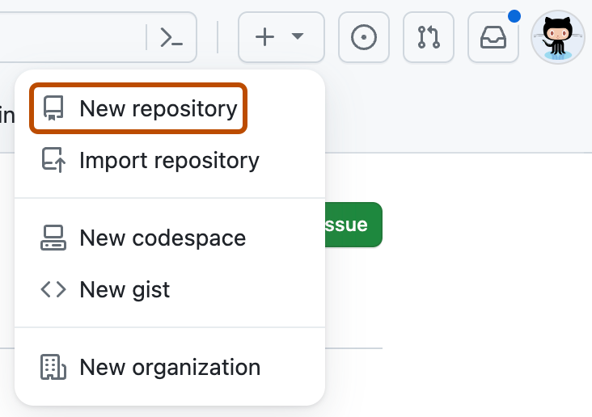
완료 확인 새 저장소 이름을 적는 화면이 열려요.
원본 화면: GitHub Docs. 원본 화면 위에 교재의 안내 표시를 겹쳐 두었습니다. 운영체제·버전에 따라 아이콘 위치와 예시 값은 달라질 수 있어요.
P2저장소 이름은 내계정.github.io
할 일 Repository name에 본인 GitHub 사용자 이름.github.io를 적어요. 예: 사용자 이름 mindlearner면 mindlearner.github.io. Public 선택, Add README 켜기 → Create repository.
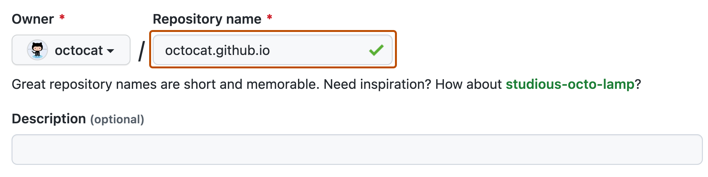
완료 확인 내계정.github.io 저장소가 열려요. 공식 그림의 octocat은 예시 이름이고 여러분 계정으로 바꿔야 해요.
원본 화면: GitHub Docs. 원본 화면 위에 교재의 안내 표시를 겹쳐 두었습니다. 운영체제·버전에 따라 아이콘 위치와 예시 값은 달라질 수 있어요.
P3Add file → Upload files
할 일 저장소의 Code 탭 → Add file → Upload files. publish-site 폴더 자체 안으로 들어가 파일들을 선택하거나 드래그합니다.
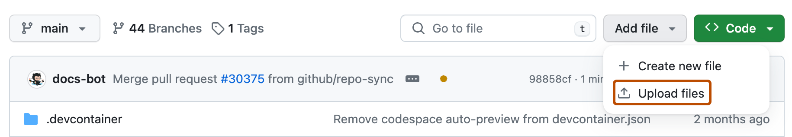
완료 확인 저장소 최상위에 index.html·style.css·app.js가 올라갈 미리보기가 보여요. publish-site/index.html이라는 한 겹 아래 경로가 되지 않게 확인합니다.
원본 화면: GitHub Docs. 원본 화면 위에 교재의 안내 표시를 겹쳐 두었습니다. 운영체제·버전에 따라 아이콘 위치와 예시 값은 달라질 수 있어요.
P4파일을 저장소에 확정하기
1업로드 목록의 파일 이름·경로 확인
2Commit message: 첫 웹페이지 공개
3본인 연습 저장소: main에 직접 커밋 선택
4Commit changes 선택. 새 브랜치 경로라면 PR을 만들고 main에 병합
완료 확인 Code 탭에서 main 브랜치 최상위 파일을 볼 수 있어요. 커밋은 수정 내용을 이력 한 묶음으로 확정하는 작업입니다.
클릭 순서를 단순화한 교재용 그림입니다. 실제 서비스 화면 캡처는 아닙니다. 실제 화면에서는 같은 메뉴 이름을 찾아가세요.
P5Settings → Pages 열기
할 일 저장소 위쪽 Settings → 왼쪽 Code, planning, and automation 아래 Pages. 개인 계정 Settings가 아니라 이 저장소의 Settings입니다.
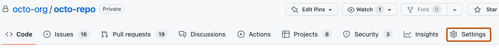
완료 확인 Build and deployment 설정이 보여요.
원본 화면: GitHub Docs. 원본 화면 위에 교재의 안내 표시를 겹쳐 두었습니다. 운영체제·버전에 따라 아이콘 위치와 예시 값은 달라질 수 있어요.
P6Deploy from a branch → main → /(root) → Save
할 일 Source에서 Deploy from a branch 선택 → Branch: main → Folder: /(root) → Save. 실제 브랜치 이름이 다르면 파일이 있는 브랜치를 고르세요.
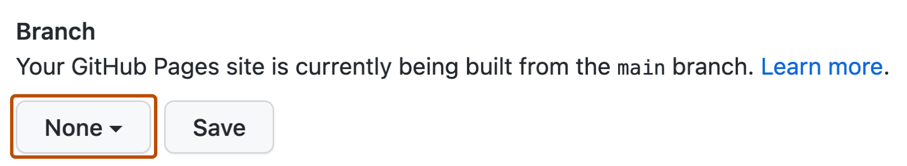
완료 확인 Pages 설정에 배포 상태와 Visit site 주소가 생겨요. 최초 공개와 수정 반영은 몇 분, 경우에 따라 약 10분 걸릴 수 있어요.
원본 화면: GitHub Docs. 원본 화면 위에 교재의 안내 표시를 겹쳐 두었습니다. 운영체제·버전에 따라 아이콘 위치와 예시 값은 달라질 수 있어요.
주소
어떤 화면인가요?
https://github.com/내계정/내계정.github.io
내가 코드와 기록을 관리하는 곳
https://내계정.github.io
친구가 웹페이지를 보는 공개 주소
http://127.0.0.1:5500
내 PC에서만 쓰는 Live Server 주소
브라우저가 친구에게 파일을 받게 해 주는 곳이 Pages이므로 내 PC를 꺼도 공개 주소는 열립니다. 404라면 먼저 main을 선택했는지, root에 index.html이 있는지 봅니다. 저장소에 파일만 올리고 Pages를 켜지 않으면 공개 사이트가 안 생깁니다.
책을 잠깐 덮어 보세요
지금 친구에게 보내야 하는 주소는 GitHub 코드 주소인가요?
확인 답안
친구에게는 https://내계정.github.io라는 공개 주소를 보냅니다. github.com 주소는 코드 관리 화면입니다.
혼자 해 보는 과제
기본 공개 주소를 휴대전화에서 열어 보세요. 이 성공을 확인한 뒤 개인 도메인 단계로 갑니다.
17장에서는 내계정.github.io라는 기본 주소를 받았습니다. 이 주소 대신 www.내가등록한이름.com 같은 이름을 쓰고 싶다면 도메인을 등록합니다. 보통 기간별 비용이 있고, 계속 쓰려면 갱신합니다. 도메인에 홈페이지 내용이 저장되는 것은 아닙니다. 홈페이지 파일은 이미 Pages에 있어요.
등록할 때 할 일: 다섯 단계
가비아 공식 사이트 → 가입·로그인 → 도메인 검색. 다른 등록기관을 이미 쓰고 있다면 그곳의 같은 기능을 사용할 수 있어요.
원하는 이름과 끝부분(.com 등)까지 확인합니다. 다른 사람이 사용 중이면 다른 이름을 고릅니다.
등록 기간·총액·다음 갱신 가격·자동 갱신 여부를 읽습니다. 부가 상품을 확인하고 도메인 등록을 진행합니다. 이 수업에 별도 웹호스팅 결제는 필요하지 않습니다.
실제 등록할 경우 소유자 연락처·이메일을 입력하고 본인이 결제합니다. 인증 메일이 오면 그 안내를 완료합니다.
관리 화면의 등록 목록·만료일을 확인하고 아래 두 항목을 적습니다. 아직 사이트가 안 나오는 것은 다음 연결이 남아서일 수 있어요.
내가 적을 것
예시와 구별해서 실제 값을 적기
등록한 이름
________________________
친구에게 알려 줄 대표 주소
www.________________________
이 실습은 www를 붙인 주소 하나부터 연결합니다. 예를 들어 example.com을 등록했다면 연습의 대표 주소는 www.example.com처럼 됩니다. www를 따로 한 번 더 결제하는 것이 아니라 등록한 이름 아래의 연결 이름으로 설정합니다. www 없는 주소까지 연결하는 추가 설정은 다음 장의 접힌 설명에 둡니다.
등록 화면의 순서 그림 보기D1가비아에서 원하는 주소 검색
1gabia.com → 회원가입 또는 로그인
2상단 도메인 → 도메인 검색
3원하는 이름과 .com 등 종류 입력 → 검색
4등록 가능한 이름을 선택 → 신청하기
완료 확인 내가 등록하려는 철자와 도메인 종류가 신청 목록에 정확히 표시돼요.
클릭 순서를 단순화한 교재용 그림입니다. 실제 서비스 화면 캡처는 아닙니다. 실제 화면에서는 같은 메뉴 이름을 찾아가세요.
D2등록 정보 입력과 완료 확인
1도메인 철자·기간 확인
2소유자·관리자 정보와 연락 가능한 이메일 입력
3요청되는 이메일·연락처 인증 완료
4네임서버는 가비아 기본값 사용. 불필요한 추가 호스팅 선택은 해제
5약관·총금액 확인 후 본인이 결제
6My가비아에서 도메인 등록 완료·만료일 확인
완료 확인 본인 관리 목록에 새 도메인이 나타나요. 등록이 끝났어도 아직 사이트는 연결 전일 수 있습니다.
클릭 순서를 단순화한 교재용 그림입니다. 실제 서비스 화면 캡처는 아닙니다. 실제 화면에서는 같은 메뉴 이름을 찾아가세요.
책을 잠깐 덮어 보세요
도메인을 등록했는데 왜 페이지가 바로 안 나오나요?
확인 답안
주소 이름 등록만 끝났기 때문일 수 있습니다. 다음 장에서 그 이름을 이미 만든 Pages 호스팅과 연결합니다.
혼자 해 보는 과제
등록했다면 이름과 대표 주소를 적으세요. 구매하지 않는다면 Pages 기본 주소로 20장의 수정 반영을 먼저 연습해도 됩니다.
Custom domain 칸에 www.실제로등록한도메인만 적고 Save. https://나 /경로는 넣지 않습니다. 여기의 Save는 주소 연결 설정이며 평소 수정 때 다시 누르지 않습니다.
가비아를 쓰면 My가비아 → DNS 관리툴 → 내 도메인 설정 → 레코드 수정으로 갑니다. 아래의 한 줄을 입력합니다. 기본 네임서버를 다른 회사로 바꿔 두었다면 실제 DNS는 그 회사에서 고쳐야 하므로 추가 설명을 확인하세요.
종류 CNAME, 호스트 www, 값 내계정.github.io로 저장합니다. 예시 문자열이 아니라 실제 GitHub 계정 이름을 넣어요.
주소 연결과 HTTPS 인증서 준비는 서버가 처리하므로 기다립니다. Pages에서 Enforce HTTPS가 선택 가능해지면 켭니다. 그다음 https://www.실제도메인을 열어 자기 페이지인지 확인합니다.
종류
호스트
값
CNAME
www
내계정.github.io — 자신의 계정으로 바꾸기
이 한 줄을 읽으면: “www.내도메인으로 들어오려는 사람에게 내계정.github.io 쪽을 안내한다”입니다. 값에 https://, github.com/…, 저장소 경로를 넣지 않아요. 저장 후 인터넷에 새 정보가 퍼지기까지 시간이 걸릴 수 있습니다. 바로 안 된다고 같은 값을 계속 지웠다 넣지 않습니다.
헷갈리면 이 두 칸만 구별하세요
Pages Custom domain: www.내도메인 → 방문자가 쓸 이름
DNS CNAME의 값: 내계정.github.io → 그 이름이 찾아갈 곳
연결 완료 후 같은 주소는 계속 유지. 내용만 바꾸는 방법은 20장
교재용 클릭 순서 그림이며 실제 프로그램 캡처가 아닙니다.
추가 준비 · 도메인 소유 확인(TXT)과 실제 DNS 관리 위치
GitHub는 내 계정이 관리하는 도메인임을 먼저 확인하는 것을 권장합니다. 연결을 처음 할 때 교수자와 이 절차도 확인하세요. 이 TXT는 웹파일 업로드가 아니라 이름 소유 확인용입니다.
GitHub 개인 프로필 → Settings → Pages → Add a domain → 등록한 루트 도메인 입력. 저장소 Settings와 다른 개인 설정입니다.
GitHub가 준 TXT 이름·고유 값을 실제 DNS에 추가 → GitHub에서 Verify → Verified 확인. 이름 입력창이 도메인을 자동으로 붙이면 완성된 이름을 대조합니다. 값을 임의로 만들지 않고 확인용 TXT는 유지합니다.
가비아에서 산 이름이라도 네임서버를 다른 회사로 바꾸면 그 회사가 실제 DNS 답을 관리합니다. 도메인 관리에서 네임서버를 먼저 확인하세요. “파일 호스팅은 Pages”와 “DNS 관리 위치”는 서로 다른 정보입니다.
연결 작업 네 단계
① GitHub 개인 설정에서 도메인 소유 확인용 TXT 받기 → 실제 DNS에 추가 → GitHub에서 Verified 확인
② 이 사이트 저장소 Settings → Pages → Custom domain에 www.내도메인 입력 → Save
③ 실제 네임서버가 관리하는 DNS에 www CNAME과 루트 A 기록 추가
④ DNS 확인·인증서 발급을 기다리고 HTTPS 적용 → 실제 주소 접속 확인
교재용 클릭 순서 그림이며 실제 프로그램 캡처가 아닙니다.
C1개인 Settings → Pages → Add a domain
할 일 오른쪽 위 프로필 사진 → Settings → 왼쪽 Pages → Add a domain → example.com 대신 자신의 루트 도메인 입력. 이 단계는 개인 계정 설정입니다.
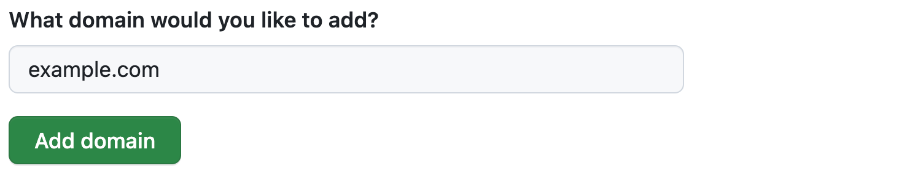
완료 확인 DNS TXT 이름과 고유 확인값이 화면에 나타나요.
원본 화면: GitHub Docs. 원본 화면 위에 교재의 안내 표시를 겹쳐 두었습니다. 운영체제·버전에 따라 아이콘 위치와 예시 값은 달라질 수 있어요.
추가 연결 · www 없는 주소도 열리게 하고 싶다면
먼저 www 주소 연결을 성공한 뒤 진행합니다. 같은 새 도메인의 루트(@)에 아래 A 기록 네 개를 설정해 GitHub Pages로 연결합니다. @는 www 없는 루트 이름을 뜻합니다. 값은 현재 공식 안내와 대조하세요.
종류
호스트
값
A
@
185.199.108.153
A
@
185.199.109.153
A
@
185.199.110.153
A
@
185.199.111.153
이미 같은 이름의 다른 기록이 있다면 충돌 여부를 확인합니다. 메일 MX 기록 등 다른 서비스 설정을 함께 지우지 마세요. 공식 도메인 연결 안내를 확인합니다.
추가 확인 · CNAME 파일·HTTPS·연결 실패
브랜치 방식의 Pages에서 Custom domain을 저장하면 저장소에 CNAME 파일이 생길 수 있습니다. DNS의 CNAME 기록과 이름만 같고 다른 장소의 설정입니다. VS Code로 최신 파일을 가져올 때 이 파일을 유지하세요. DNS가 퍼지고 인증서가 준비되기까지 시간이 필요하며, 정확한 설정 후에도 최대 24시간 정도 걸릴 수 있다는 공식 안내가 있습니다.
C2GitHub의 TXT 이름·값을 DNS에 복사
할 일 GitHub 화면에 나온 TXT 레코드 이름과 값을 가비아 DNS에 추가합니다. 호스트 입력이 도메인을 자동으로 붙이는 방식이면 _github-pages-challenge-내계정 부분만 넣고 완성 이름을 확인하세요.
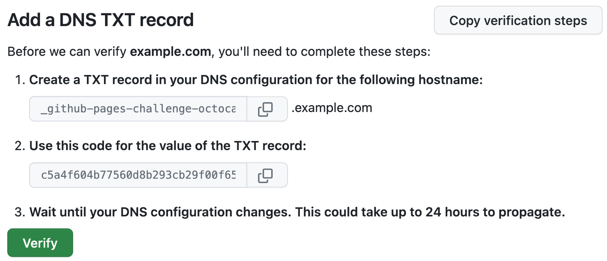
완료 확인 확인 이름이 _github-pages-challenge-내계정.내도메인이 되고, 값은 GitHub가 본인에게 준 고유 문자열이어야 합니다.
표시된 예시 확인값을 그대로 복사하지 마세요. TXT는 소유권 확인용이고 웹파일 업로드용이 아닙니다. 반영 후 GitHub의 Verify/Continue verifying을 눌러 Verified를 확인하고 이 TXT는 유지합니다.
원본 화면: GitHub Docs. 원본 화면 위에 교재의 안내 표시를 겹쳐 두었습니다. 운영체제·버전에 따라 아이콘 위치와 예시 값은 달라질 수 있어요.
C3저장소의 Custom domain에 대표 주소 저장
1내계정.github.io 저장소 → Settings
2왼쪽 Pages → Custom domain
3www.내도메인만 입력. https://나 /경로는 넣지 않음
4Save
완료 확인 저장소가 대표 주소를 기억합니다. 브랜치 공개에서는 CNAME 파일이 생성될 수 있어요. 아직 DNS 검사 대기여도 다음 단계를 진행합니다.
클릭 순서를 단순화한 교재용 그림입니다. 실제 서비스 화면 캡처는 아닙니다. 실제 화면에서는 같은 메뉴 이름을 찾아가세요.
C4가비아 DNS 관리툴에서 레코드 편집
1가비아 로그인 → My가비아
2DNS 관리툴 → 해당 도메인 오른쪽 설정
3DNS 레코드 설정 → 레코드 추가
4아래 표대로 A 네 줄과 CNAME 한 줄 입력 → 저장
종류
호스트
값
A
@
185.199.108.153
A
@
185.199.109.153
A
@
185.199.110.153
A
@
185.199.111.153
CNAME
www
내계정.github.io
TXT
GitHub가 준 확인 이름
GitHub가 준 고유 값
완료 확인 다섯 줄이 기록 목록에 보입니다. 네임서버가 외부 업체라면 그 업체 DNS에서 같은 종류의 기록을 편집해야 해요.
클릭 순서를 단순화한 교재용 그림입니다. 실제 서비스 화면 캡처는 아닙니다. 실제 화면에서는 같은 메뉴 이름을 찾아가세요.
C5DNS 확인 후 HTTPS 켜기
1저장소 Settings → Pages로 돌아가기
2DNS check successful 등 연결 확인
3인증서 준비 후 Enforce HTTPS 선택
4브라우저 주소창에 https://www.내도메인 직접 입력
5www 없는 https://내도메인도 접속해 대표 주소 이동 확인
완료 확인 내 주소에서 페이지가 열리고 https로 표시됩니다. DNS나 인증서 준비는 즉시 끝나지 않을 수 있어요.
클릭 순서를 단순화한 교재용 그림입니다. 실제 서비스 화면 캡처는 아닙니다. 실제 화면에서는 같은 메뉴 이름을 찾아가세요.
기본 Pages 주소도 안 열리면 호스팅 공개 설정·파일을 확인합니다. 기본 주소는 정상인데 내 도메인만 실패하면 실제 네임서버·www 기록·Custom domain의 철자부터 확인합니다. HTTPS 공식 안내.
책을 잠깐 덮어 보세요
문구를 고칠 때 이 주소 연결을 다시 해야 하나요?
확인 답안
아니요. 처음 연결이 끝나면 주소·DNS는 유지합니다. 다음부터는 개발툴에서 파일을 수정해 같은 저장소로 보냅니다.
혼자 해 보는 과제
www 대표 주소에서 자신의 제목을 확인하세요. 연결하지 않은 경우 기본 Pages 주소로 20장을 진행합니다.
내가: VS Code 수정·저장내가: Commit·Push서버가: 자동 배포방문자가: 같은 주소에서 새 파일 받기
여기에는 조건이 있어요. 17장의 Pages가 main / (root)에 연결되어 있어야 하고, 개인 주소를 쓰면 19장의 연결도 끝나 있어야 합니다. 도메인이 없어도 Pages 기본 주소에서 같은 수정 반영을 연습할 수 있습니다.
처음 한 번만: VS Code에 같은 저장소 가져오기
Git은 변경 기록 프로그램, Clone은 인터넷 저장소를 내 PC로 연결해 내려받는 일입니다. 아직 Git을 설치하지 않았다면 설치 안내부터 따라 하세요. 이미 Clone한 폴더가 있다면 이 부분을 건너뜁니다.
GitHub에서 자신의 내계정.github.io 저장소 → Code → HTTPS 주소 복사.
VS Code에서 Ctrl+Shift+P(Mac ⌘+Shift+P) → Git: Clone → 복사한 주소 붙이기 → 저장할 폴더 선택 → 완료 후 Open.
로그인이 나오면 GitHub 본인 계정으로 로그인하고 승인 후 VS Code로 돌아옵니다. 이제 왼쪽에 공개 사이트의 index.html·style.css·app.js가 보여야 해요.
매번: 제목 한 줄만 바꿔 반영하기
VS Code 왼쪽에서 index.html을 열고 공개 연습 문구 v1을 v2로 고칩니다. Ctrl+S(Mac ⌘+S)로 저장합니다.
내 PC에서 확인하려면 index.html을 Chrome으로 열거나 Live Server로 확인합니다. 이것은 아직 나만 보는 수정입니다.
왼쪽 Source Control(가지 모양 아이콘) → 변경 파일 클릭. 이전 줄·새 줄을 읽고 의도한 수정만 확인합니다.
파일 옆 +를 눌러 이번에 기록할 파일을 고릅니다. 메시지 칸에 “소개 문구 v2로 수정” 입력 → Commit. 이것은 내 PC 기록입니다.
Sync Changes(변경 내용 동기화)를 누릅니다. 또는 … 메뉴의 Push. 이 작업이 기록을 GitHub로 보내는 단계입니다. 로그인·동기화 안내가 나오면 확인합니다.
이제 자동 배포가 진행됩니다. 잠시 후 기존의 공개 주소를 새로고침해 v2인지 확인합니다. 도메인·DNS·Pages의 Save를 다시 누르는 단계는 없습니다.
index.html에서 이 부분만 바꾸기
변경 전: <p id="version">공개 연습 v1</p>
변경 후: <p id="version">공개 연습 v2</p>
단계
일상말로 풀면
저장
내 PC 파일에 쓴다
Commit
내 PC 변경 기록에 이름을 붙인다
Push / Sync Changes
기록을 인터넷 저장소에 보낸다
자동 배포
서버가 방문자용 파일을 새 버전으로 바꾼다
버전이 제공되면 VS Code의 Commit 메뉴에 Commit & Push가 있어 두 단계를 이어서 실행할 수도 있습니다. 처음에는 위처럼 구별해서 익히세요. Commit만 하고 끝내면 인터넷 사이트는 안 바뀝니다. Ctrl+S 저장만으로도 인터넷까지 전송되는 것은 아닙니다.
주소가 그대로인데 내용은 왜 바뀌나요?
주소 연결은 이미 같은 Pages를 가리키고 있어요. 파일을 새 버전으로 바꿔 제공하므로 이름은 그대로, 내용만 바뀝니다. 종이 안내문의 주소를 매번 바꾸는 대신 같은 게시판에 새 안내문을 붙이는 것과 비슷합니다. HTML 문구는 index.html, 색·여백은 style.css, 버튼 동작은 app.js를 바꾸고 바꾼 파일을 모두 커밋·푸시합니다.
안 바뀔 때는 이 세 가지만 먼저
저장한 파일과 폴더가 맞나? 같은 Clone 프로젝트의 파일인지 확인합니다.
Commit 뒤 Push까지 성공했나? 전송 오류·계정·대상 main 브랜치를 확인합니다.
자동 처리 후 같은 주소를 새로 열었나? 서버 처리 전이거나 이미 열어 둔 탭이면 잠시 기다린 뒤 새로고침합니다. 그래도 안 되면 아래 상태 확인을 사용합니다.
선택 · 자동 배포 상태도 VS Code 안에서 보기
왼쪽 Extensions에서 GitHub Actions 검색 → 게시자 GitHub 확인 → 설치·로그인. 같은 Clone 폴더를 연 상태에서 왼쪽 GitHub Actions 아이콘의 최근 실행을 확인합니다. 진행 중은 서버 작업 중, 성공은 공개 파일 반영 완료, 실패는 로그 확인이 필요하다는 뜻입니다. 동적 Pages 실행이 버전에 따라 목록에 안 보이면 저장소 Actions에서 상태를 볼 수 있지만, 거기서 완료를 눌러야 한다는 뜻은 아닙니다. 공식 확장 안내.
선택 · 저장·커밋·푸시의 차이를 눌러서 이해하기
눌러서 이해하기 · 어디까지 바뀌었나요?
학습용 모형입니다. 실제 파일·GitHub·DNS는 변경하지 않습니다. 실제 자동 작업의 중간 상태를 직접 살펴보려고 단계 버튼으로 나누었습니다.
VS Code 편집기v1
내 PC 저장 파일v1
내 PC 커밋v1
GitHub 저장소v1
Pages 호스팅v1
방문자 화면v1
https://www.example.com — 설명용 가상 화면
상담실 공개 연습 v1
선택 · 아직 Git 연결 전이라면 웹사이트 업로드도 가능
이것은 위 순서에 추가로 해야 하는 일이 아니라 다른 업로드 방법입니다. GitHub Upload files → Commit changes는 서버 기록을 바로 바꿔 자동 배포를 시작할 수 있어요. 평소 VS Code 작업과 중복으로 할 필요는 없습니다. 브라우저에서 수정한 기록이 있다면 다음 로컬 작업 전에 Pull로 가져와 맞춥니다.
내가 VS Code에서 하는 작업
① File → Open Folder → 복제한 사이트 폴더 열기. 브랜치가 Pages에 연결한 main인지 확인
② index.html에서 “공개 연습 v1”을 “공개 연습 v2”로 수정 → 저장. CSS·JS도 고쳤으면 모두 저장
③ Live Server 등으로 로컬 결과 확인. 이 주소는 내 PC용이므로 공개 주소와 구별
④ 왼쪽 Source Control → 바뀐 파일 클릭 → 비교 화면을 읽고 이번 수정만 +로 Stage
⑤ 메시지 “상담실 소개 v2로 수정” 입력 → Commit
⑥ Sync Changes 또는 Source Control의 … → Push. 로그인·동기화 안내 확인 → 전송 완료
교재용 클릭 순서 그림이며 실제 프로그램 캡처가 아닙니다.
U1같은 저장소·같은 경로로 수정 파일 올리기
할 일 GitHub의 같은 저장소 Code 탭 → Add file → Upload files → 바뀐 index.html·style.css·app.js 선택. 처음 올린 것과 같은 파일 이름·경로로 넣어요.
완료 확인 파일 추가가 아니라 기존 경로의 새 내용으로 반영할 준비가 됩니다. 저장소가 여러 개면 주소와 브랜치부터 확인하세요.
원본 화면: GitHub Docs. 원본 화면 위에 교재의 안내 표시를 겹쳐 두었습니다. 운영체제·버전에 따라 아이콘 위치와 예시 값은 달라질 수 있어요.
U2커밋과 배포 결과 확인
1Commit message: 안내 문구와 색상 v2 수정
2main에 반영되는 경로로 Commit changes. PR이면 병합까지 완료
3Actions에서 Pages 배포 실행 열기
4완료 체크가 뜰 때까지 기다린 뒤 Settings → Pages → Visit site
완료 확인 최신 커밋과 그 커밋의 배포가 성공한 것을 확인합니다. 커밋 성공과 배포 성공은 다릅니다.
클릭 순서를 단순화한 교재용 그림입니다. 실제 서비스 화면 캡처는 아닙니다. 실제 화면에서는 같은 메뉴 이름을 찾아가세요.
책을 잠깐 덮어 보세요
VS Code에서 무엇까지 해야 공개 사이트가 바뀌기 시작하나요?
확인 답안
같은 저장소의 연결된 브랜치로 Push까지 해야 합니다. 이후 배포는 자동입니다. 배포 완료는 사용자가 누르는 버튼이 아닙니다.
혼자 해 보는 과제
자기 사이트 문구 한 줄을 고치고 같은 주소에서 바뀐 것을 확인하세요. 저장·Commit·Push 중 어디까지 했는지, 서버가 자동으로 한 일은 무엇인지 설명합니다.
다운로드 폴더의 .exe 실행 → 설치 안내·기본 설정 확인 → Install → Finish
VS Code를 닫았다 다시 열고 git --version 재확인
교재용 클릭 순서 그림이며 실제 프로그램 캡처가 아닙니다.
Mac
git --version 실행 시 개발자 명령줄 도구 설치창이 뜨면 설치 진행
Git이 없고 설치창도 없으면 xcode-select --install 입력 → macOS 안내에 따라 설치
VS Code 재실행 → git --version 확인. 이미 버전이 나오면 추가 설치 생략
교재용 클릭 순서 그림이며 실제 프로그램 캡처가 아닙니다.
2. 첫 커밋 때 작성자 이름을 묻는다면
처음 Commit에서 작성자를 정하라는 안내가 나올 수 있습니다. Terminal에 아래 두 명령을 한 줄씩 입력하고 따옴표 안을 자신의 정보로 바꾸세요. 이것은 기록에 붙일 이름이며 로그인 비밀번호가 아닙니다. GitHub에 실제 이메일을 보이고 싶지 않으면 개인 Settings → Emails에 표시된 본인의 noreply 주소를 사용할 수 있어요.